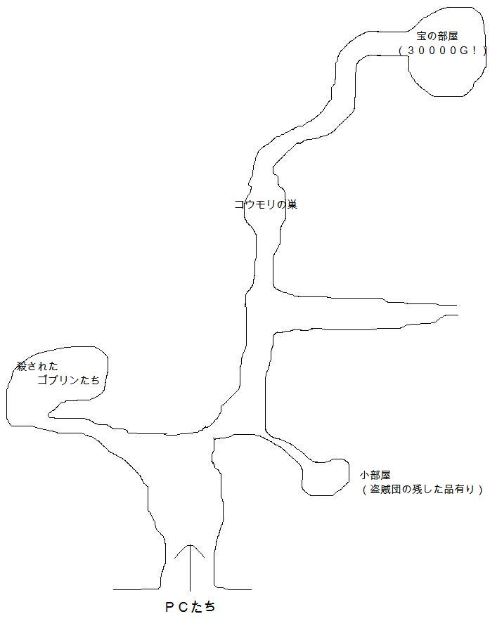

これは、アリアンロッドＲＰＧのリプレイです。リプレイとは、ＴＲＰＧのセッションの様子を文章に起こし、読み物の形にしたものです。
では、まず今回使用したシステム、アリアンロッドについての簡単な紹介を。
アリアンロッドは、剣と魔法のファンタジー世界を舞台に、様々な冒険を繰り広げる――というようなＲＰＧです。雰囲気は全体的にライトな感じで、ＭＭＯＲＰＧの様な雰囲気、と言われることも多いです。
この世界には一般的な人間であるヒューリン以外にも、背が高く知的で長命なエルダナーン、小柄で陽気なフィルボルなどの様々な種族がいます。
この世界には、「冒険者」という特殊な職業があります。冒険者たちは剣や魔法の技を身に付け、魔物退治や護衛などの様々な依頼を受けます。また、この世界の冒険者は登録制で、神殿が認可しています。冒険者はギルドというグループ単位で管理されています。
ＰＣ（プレイヤーキャラクター）たちは、基本的には冒険者となってパーティを組み、様々な冒険に挑む――アリアンロッドはそんなＲＰＧです。
それでは、今回冒険に挑むＰＣたち５人を紹介します。ちなみにＧＭ（ゲームマスター）は私、mouserです。
データは１レベルのサンプルキャラクターを使用しました。
タマモ
ヒューリン 女 １８歳 ウォーリア/サムライ
両親は剣の師範だったが、金は稼げず子供の時から苦労してきた。そのため、タマモ自身は金を稼げる冒険者になった。その苦労のせいか、性格がやや歪んでいて血を見るのが大好き……らしい。
「ふふふ、この赤い血がいい」
「もっと私を楽しませろ」
ティア・ドロップ
ヒューリン 女 １６歳 メイジ／メイジ
父親は優秀なメイジだったが、同僚にはめられて処刑された。以来生きていくために冒険者となり、力をつけようとしている。父親の件があるので、不正にはうるさい。仕事のない時は占い師をして小銭を稼いでいる。
「みなさん、報告はしっかりしませんと。不正はいけませんわ」
「あら、あなた死相がでていますわ」
修道士ログナー
ヒューリン 男 １６歳 アコライト/アコライト
傭兵だった両親が戦傷で廃業したのを目にし、一生食いっぱぐれないとの理由から信仰心に目覚めた。目端が利き、ケチくさい。しかし、生死観については傭兵のようにあっけらかんと達観した側面がある。
「あんたら、アコライトほどいい商売はないんだぜ。一生食いっぱぐれないってね」
「死ぬ時は死ぬって。神様がオイラたちを見てるのに飽きたんだろうさ」
ポット
フィルボル 男 ２３歳 シーフ/バード
放浪の吟遊詩人。英雄ギルドに潜りこんで叙事詩を作るのが夢、と自称している。残念ながら過去にプロデュースを試みたギルドは無謀な冒険に挑戦して全滅した。
「よっ、さすが未来の大英雄！！言うことが違うねぇ」
「結局うまくいったんだ。問題ないだろ？」
先物のジンベエ
ヒューリン 男 ２０歳 メイジ/ニンジャ
親が忍者の里の幹部だったが、小麦の先物取引に大失敗し多額の借金を抱えることとなった。そのため、家族そろって街に逃げてきて、表向き商人として商売も行っている。冒険で得た金も商品に投資している。
「冒険者は最も割がいい投資ですよ」
「この後サンマが上がるはずだ。買い占めておこう」
アリアンロッドではライフパスとして、「出自」「境遇」「運命」の３つを決めます。それに従って簡単にキャラの設定を作ると、このように親や生まれに関係した設定が多くなるんですね（ちなみに「境遇」は２人が「没落」、２人が「死神」という不吉なものに）。
この５人が結成するギルドの名前もランダムに決めると「光の射手」に。ギルドのリーダー、ギルドマスターはジンベエに決定。
こんな５人、「光の射手」に今回舞い込んだ依頼は、初心者冒険者の定番、ゴブリン退治。しかし、ゴブリンを追って入った洞窟でＰＣたちが目にしたものとは――。そして、ＰＣたちが最後に下す決断とは――。
……いや、そんな大した話ではないんですけどね。
GM：んじゃあ、まあ、シナリオ始めます。
一同：はいはーい。
GM：皆さんは町の神殿にでも仕事を探しに来ているといった感じです。
ログナー：おっちゃん！何か仕事ない？
GM：今はあんまないです。
ログナー：危ないかどうかはアレとして、手っ取り早く金が入るやつ。
GM：これなんか楽だと思いますけど・・とりあえず今ある仕事は近くの村のゴブリン退治ってのがありますよ。
ログナー：ゴブリン退治？ ゴブリンってなんだっけ？
ログナー：（ポットを見ながら）お前らみたいなやつだっけ？？ なんか友達かなんかで話しつかない？
タマモ：アコライトがそれいっちゃダメー。
ジンベエ：仕事としては手堅い部類ですね。
GM：まあ、小銭かせぎってとこですね。
ログナー：ゴブリンをボコスカ殴る、と。
GM：近くの森でゴブリンが目撃されたらしいので、詳しくは村の人から聞いてもらえばわかると思います。
ティア：話としては簡単な話ですわ。
ジンベエ：小銭稼ぎって感じで。
ログナー：依頼料の話とかをちょっとしていくって感じかな。
GM：報酬は一応パーティーで300Gらしいですが、詳しくは村で聞いてみてください。
ジンベエ：えっ、それ高いの？
GM：安いほうです。
ポット：安いんだ。
GM：1レベルの冒険者としても安いほうですね。5人パーティーとしては安いです(笑）。
ログナー：貧しい、貧しいよ。
GM：安すぎるっていう程ではありませんが。
ポット：街に書いてあるドラゴン退治とかそういう風な頼みとかもあるんじゃないか？
ログナー：そんなんだから死神なんて言われるんだ（笑）。ゴブリンってのは財宝を溜め込んだりはしないのかい？
ポット：たぶんドラゴンはたくさん溜め込んだりするんだろうけどさ。
ログナー：まあいい、とりあえず村に向かうか。
ジンベエ：むこうの村との交渉次第だろう。
GM：詳しいことはむこうの村で聞いて下さい。まあ、簡単な仕事だとは思いますが・・。
ティア：簡単な仕事を数こなしていくっていうのもそれはそれで一つの考え方ですけどね。
ログナー：安全確実！
GM：そんな感じで村に向かいました。村に行くには一日もかからないくらいで、森の近くにひっそりとあるような感じです。
GM：普通に村に入っていくとそこには村人がいます。
GM（村人）：「皆さんどうしましたかこんな村まで」
ログナー：オイラたちはギルド、光の射手たち。
ティア：我々は協会の依頼で来ました。
GM（村人）：「ああ、冒険者の方々でしたか。村長のところにどうぞ」と案内する。
ログナー：とりあえず歩きながら村人たちの服装だとか貧しいかとかをチェックしながら行くよ。
ポット：あと依頼中だから道になにか落ちてないかとか。
一同：ダメだ。悪いやつだ（笑）。
GM：普通よりはちょっと貧しいくらいのようです。
ログナー：ダメだな。貧しいところか。ブツブツ。
ティア：ダメですね。良心がいません（笑）。
ログナー：別になにも悪いことは企んでいるわけではない(笑）。
ジンベエ：我々がここの村長と信頼関係を築けば今後も依頼がくるかも。
一同は村長宅に向かった。
GM（村長）：「お待ちしておりました。どうぞ」
GM（村長）：「今回の依頼ですが、近くの森に村の若者が入っていったところゴブリンを発見したと言っておりまして」
ログナー：何匹くらいだい？
GM（村長）：「後でその若者にも話を聞いてもらいたいんですが、話によりますと目撃したのは2、3匹だったということです」
ログナー：しかし、相手は1匹みたら30匹いるようなやつらだからな。
GM（村長）：「まあ確かに洞窟の中に入っていったって言うので、奥にトロールなどがいるかもしれません」
ティア：じゃあその洞窟は普段は使われない？
GM（村長）：「私たちもそこまで奥までは行くことはあまりないので」
ログナー：じゃあ人間が使ってるような洞窟ではないと。
GM（村長）：「危険な動物が住んでいるかもしれないので、危ないと言ってあまり入ったりもしたことはないですね」
ポット：ところで、お茶とかは……。いやっ、すぐに行きますのでお構いなく。
GM（村長）：「あっ、すみません、気が利きませんで。すぐご用意いたします」
ログナー：とりあえず報酬の話を……いや、こういうことは始めにきっちり確認しておかないとね。
ポット：このお茶菓子あんまり美味しくないね〜。（ひそひそ）
ログナー：我々冒険者の間ではこれぐらいが相場なのですけど、と吹っかけてみる？（ひそひそ）
ジンベエ：これからも我々に依頼をくれるというのであれば、今回はこれでいいだろう。
GM（村長）：「ゴブリン退治ならば300Gぐらいでいいのではないかと。話で聞いた中ではそれくらいだと思っていたのですが、もしなにかあればまたその時に……」
ログナー：つまり、ゴブリンの他にもっと危険なものがいればそのときは報告するので追加で報酬がでるっていうことでよろしいですね？
ジンベエ：実はね、このタマモちゃんはね普段はここにくるような冒険者じゃないんですよ。
タマモ：ゴブリンさえいてくれればいいけどね、わたしは。
ポット：やっぱり300Gぐらいではね、もっとタチの悪い冒険者がこないとも限りません。今回みたいにたまたま我々のような冒険者が来てよかったものの、やっぱり300ではいけませんよ。
ジンベエ：ひでーヤツらだこいつら。
ティア：下手をすると、冒険者のなかでもはみ出し者が来てしまう。
ポット：そうそう、そういうことがあるんでよくないですよ。あっ、村長さん、茶菓子食べないんなら貰うね。
ログナー：さっきの発見者の若者ってのはどこのどんなヤツなんだい？ そいつがフカシてるって可能性もあるからな。
GM（村長）：それはレーンっていう若者でして・・：と説明します。
ポット：すいませんね、夕食までご馳走になってしまって。
ログナー：それはいいから、とりあえずレーンのところに行ってみよう。
そんな感じで一同、レーンの家に向かう。かくかくしかじかと状況を説明する一同。
GM（レーン）：「皆さんが倒してくれるんですね」と言って説明してくれます。
レーンが言うには3日前くらいに森の中に入っていったとき、たまたまちょっと奥まで入っていっ
たところ、ゴブリンが洞窟に入っていったのを見たということだった。
ログナー：ゴブリンっていうのは確かなんだろうね。色が違うとか格好が違うとかいうやつはいなかったかい？
GM（レーン）：「俺が見た限りでは同じのにみえたけどな」
ティア：実はただのフィルボルだったとかない？
レーンが見たという特徴を聞いて全員でモンスター識別を試みた。
タマモ：ファンブルー！？
ティア：15〜。私の知識は正しいようです。
GM：ゴブリンだと達成値5で大丈夫なんですが（笑）。
ログナー：ゴブリン知らないなんてありえないよなー（笑）。
ティア：タマモさんなら血のにおいを嗅げば識別できるんじゃないですか。
ログナー：あれ、タマちゃん見たことなかったっけ、ゴブリン。特に危険なモンスターじゃないんだね？ ハイゴブリンとかゴブリンリーダーとかゴブリンロードとかは特にいない？
ティア：ゴブリンのまとめ役みたいな。
GM：いるとしたら、上位の妖魔が若干率いてる可能性はあります。
ポット：まあ、ボスがいる可能性はあると。
ティア：妖魔は上位はいないはず。
GM：相手がゴブリンなので力関係的に上位になっているようです。
ポット：ゴブリンの方が面白いなー。でも、3匹程度だとボスとかいなさそうだね。
ログナー：しかしね、1匹見たら10匹はいるっていうからね。
ポット：ところでさぁ、村の方にゴブリンで何か被害とか出てるの？財宝を盗まれたとか
GM：別にそんなことはないのですが、村からそこまで遠いということもなく、歩けば1日もかからず行ける所なので。
ログナー：まぁゴブリンとかフィルボルがいたら気持ち悪いからね（笑）。
ポット：何かこう、登下校中の子供が襲われたら嫌だから、隣の方で処分してくださいとか、そういうニュアンスですね、これは。
GM：あの、ゴブリンは一応、邪悪な妖魔ですが。
ポット：聞いてるとそのニュアンスに聞こえる（笑）。
タマモ：ところでそのゴブリンはどんな様子でした？たとえば人の死体を引きずっていたとか。
ログナー：あぁ、確かに。丸々と太っていたとか、がりがりにやせていたとかわかんねーかなぁ。
ティア：何かかっこいい剣を持っていたとか。
GM：遠目で見ただけなので、そういう細かい特徴まではちょっと。
ログナー：じゃあまぁ行くか。
ジンベエ：まあ、いきますか。
ログナー：ゴブリンって何食うの？
GM：特にわかりませんが、普通に人と同じ雑食だと思いますよ。
ポット：やっぱり肉の柔らかそうなヒューリンとか食べるんじゃないの？
タマモ：ヒューリンって肉柔らかいんですかね？
ログナー：やつらは、自分たちの元の種族であるフィルボルを、ことのほか憎んでいると聞いたことがあるぞ（一同笑）。
確かに、ゴブリンはフィルボルが瘴気によって「邪悪化」した妖魔です。
もっとも、フィルボルを憎んでいるという話はＧＭも聞いたことはありませんが（笑）。
ジンベエ：適当だな、そういう情報があるのか（笑）。
ティア：適当ですね（笑）。
タマモ：じゃあポットさんをおとりにして……。
ポット：こういうのはさ、可憐なヒロイン的存在の若い娘がさ、こうなんというか生贄になってゴブリンをおびきだすとか、そういう展開。
ティア：どちらかといえば、やはり煙を焚いていぶしだすんじゃありませんか？
ログナー：いぶしだし殺し（笑）。
ポット：かっこよくない（笑）。
ログナー：伝統的戦術ですよ（笑）。
ジンベエ：伝統的戦術（笑）。
ログナー：じゃあ、まぁ行ってやってみるか。
ポット：じゃあなんか、薪とかもらって行く？ 村で。
ログナー：いや、入口までに適当に拾っていこう。
GM：それは森があるので、適当に調達はできます。
ログナー：じゃあ、それを持って聞いた場所の方へどんどん行ってみよう。
ポット：だれかロープとか持ってる？
ティア：冒険者セットの中に入ってるんじゃ？
ポット：古典的手法を使うならば、ロープ3つ。
ログナー：どうやるかというと、入口でばーっと煙をたいて、ロープを下に張っておいて、わーっと出てきたらころころロープで転ぶから、さっくりさっくりと殺していくということ（笑）。 最低な姿勢だけど、ＲＰＧ研伝統のゴブリン退治手法（笑）。
タマモ：はやくゴブリンが斬りたいです（笑）。
GM：じゃあまぁ、洞窟までは話によると1日もかからない、半日ぐらいで歩いて行けます。
ログナー：とっとこ歩いていこう。
GM：そうですね、今から行っても遅くても暗くなるまでには着けるぐらいの距離です。
ティア：暗くなる前…まぁいいか。
ポット：こんなしょぼい依頼さっさと済ませようよ。日帰り、日帰り。夕飯もご馳走してくれるって言ってたし。
一同：言ってない言ってない（笑）。
GM：洞窟の方に向かってると、もうすぐ洞窟に着くぐらいのところで、危険感知を全員。【感知】+2dで。スキルなどでボーナスがある人はつきます。
一同：（ころころ）
GM：成功した人は向こうの方から何か走ってくる気配に気がつきます。森の中なのでよく見えないですが、しばらくすると10mぐらい先のところに、数匹のゴブリンと、ゴブリンより一回り大きい妖魔が走ってきます。
ティア：何、あいつは(ころころ)。
タマモ：ゴブリンだけじゃないんですね(ころころ)。
GM：エネミー識別に成功したなら、レベル3のトロウル1体と、ゴブリンはモブなので2グループ分いることがわかります。
モブとは3〜10匹のグループで1体と扱われるモンスターのこと。
要は、数に物を言わせた雑魚。
ログナー：結構いるんだな。
GM：それなりに何体かがグループになってます。
ティア：やっぱり1匹見たら10匹どころじゃすまなかったですね、これは。
タマモ：20匹ですね。
GM：いや、でもゴブリンは10匹もいないぐらい、１グループ4匹ぐらいで、2グループ。
ログナー：我々で十分勝てるくらいの強さなの？
GM：5人いたら普通に勝てると思います。
ログナー：お、トロウルとゴブリンどもがやってくるぞ。みんな、注意するんだ。
ジンベエ：どういう風な雰囲気なの？やってくるって襲ってくるわけ？
ログナー：こっちを見つけてるんでしょ。
GM：今あなたたちを見つけて、殺気立った様子はあります。
ログナー：じゃあもうなんというか、手っ取り早く叩きのめそう。タマちゃん。
タマモ：ふっふっふ、やっと斬れるんですね。
ログナー：もう斬り放題斬り放題。
ジンベエ：じゃ、いきますか。
ログナー：そうだ。トロウルがいたってことは最初に話した通り追加報酬だ。やったあ！
ジンベエ：あの村なんだか貧しそうだったけどねぇ。
タマモ：（嬉しそうに）ゴブリンのほかにもトロウルまで斬っていいんですね。
ジンベエ：じゃあ戦闘始めますか。
ゴブリンが多いため、タマモは《トルネードブラスト》を使うか悩んだが、結局そのまま戦うこと
に。GM、PL共に足りないダイス目に苦しめられるがPCたちがゴブリン2体とトロール1体を割と
あっさり倒したのであった。
アリアンロッドではモンスターを倒すとさいころを振り、出目によってドロップ品としてアイテム、 金などが手に入る。
ログナー：ドロップアイテムだあ！
ポット：倒した人が振ると良いんじゃない？
タマモ：それじゃ、ころころ。出目9。
GM：腰布100Ｇ相当。
ポット：なら、こっちのゴブリンも何か持ってるに違いない。ざくざく。出目4。何もなし。しけてやがる。
ティア：なら、こっちも。出目6。何もなし。
ポット：しけてんなあ。
ログナー：でもまあ、100Ｇか悪くはない。
GM：ドロップアイテムはそんな感じですが、あなたたちはあさっているとゴブリンの懐に宝石を見つけます。
ログナー：宝石だあ！
ティア：どんなでしょう。
ポット：鑑定をしよう。
GM：アイテム鑑定を振ってください。
ポット：全員でできるの？
GM：はい。
ポット：じゃあ、やるぞ。
ティア：ころころ。出目は14が一番高いらしい。
GM：分かりました。一応普通の宝石のようですが、合計すると価値は200Ｇくらいになります。
ポット：おお、報酬が倍になった。
ティア：200だあ、ヤッター。よし、メモっときましょう。しかし、こういう宝石って普通にゴブリンが手に入れられるものなの？
GM：まあ、珍しいですね。なにか持ってたとしてやっと10Ｇ、20Ｇくらい。
ログナー：こいつらなんか、人間とかと取引してるんじゃないか？
ポット：というより、コレは常識的に考えたら洞窟の奥にお宝があるってことじゃないの？
ログナー：でも、なんでそのまま外に持ってきてるんだ？
ティア：特に何にも考えずにきれいだから持っていた。
ポット：あー、それはやるかも。馬鹿だから。
ログナー：悪い連中とでも取引とかしてるんじゃないか？
ジンベエ：まあ、行ってみたら分かるよ。
ティア：こいつらの足跡を逆にたどってみてはどうでしょう。
ログナー：洞窟のほうから来たっぽいの？
GM：はい。
ログナー：それなら、やはり洞窟のほうへ行ってみよう。
GM：足跡の方向へ向かってみると洞窟が見つかりました。
ティア：入り口の様子を。
ログナー：隠れてる気配とかない？
GM：隠れてる気配とかはとりあえずないです。
ポット：足跡を見てみよう。
GM：近づいて足跡をみるなら、感知判定を。
一同：ほーい（ころころ）。
全員でダイスを振った結果を見比べた結果
ティア：最高は12？
GM：12か。足跡は確かに続いてるんですが、なんと言うか入り口付近で足跡を消したような様子があります。
ティア：はあ？
ログナー：足跡を消しただって？
ティア：入り口辺りだけ？
GM：少なくとも、ゴブリンが走ってきたらしくて、こっちの方は足跡が残っているけど、洞窟の近くは良く見ると消した後があります。達成値12だとそれぐらいしかわかりません。
ログナー：じゃあ、中に、ゴブリンの足跡を消すような賢い奴がいるんだな？
ポット：まぁ、とりあえず、野宿の為に焚き火を起こそう。
一同：うぃー。
ポット：じゃあ、ロープを張って焚き火をして、煙を送り込もう。
ログナー：手伝いますよ。
タマモ：周りを警戒してます。
GM：焚き火をするんですか？じゃあ、煙は焚けて、洞窟に送り込まれていきますね。
ポット：飯はどうしようか。
ティア：さっき倒したトロールの肉とか（笑）。
ポット：遠赤外線っぽいね。
ログナー：弁当を温めますか（笑）。
ポット：うむ。いいね。水筒の中の酒を温めよう（笑）。
タマモ：仕事中に酒を飲むのは…（笑）。
ポット：何、硬いこと言ってるんだね（笑）。
GM：では、しばらく皆さんは火をたきましたが、反応はないようです。
ジンベエ：やはり、頭がいいやつがいそうだな。人間かもしれない。
ログナー：まぁ、こんな程度じゃ無理かぁ。
ジンベエ：煙は洞窟に入ってるんだよね。じゃあ、穴がないと充満しそうだけど。
ログナー：結構広いか、中に対策してあるかもしれないな。
一同：うーむ。
ログナー：まぁ、入らざるを得ないでしょう。
タマモ：賛成。さっさと切って捨てましょう。
ポット：しかし、今入るとすげぇ煙そうなんだけど（一同笑）。いや、僕は煙くないんだけどね（笑）。
ログナー：背が低いから（笑）。
ジンベエ：マスクでもする？ ないけど（笑）。
ティア：まぁ、煙いのは我慢して入りますかぁ。
ログナー：入って、すげぇ広いとか、面倒くさそうなら出てくるとして、とりあえず入るかぁ。
ティア：視界も悪いし、警戒しながらいくぞぉ。
GM：はいはい。警戒しながらいくんですね。
ログナー：中の連中には多分ばれてるからな。
タマモ：ばれてなかったら驚きます。
ポット：山火事と勘違いするとか（笑）。
ジンベエ：何か煙いなぁ、誰かタバコ吸ったか、とか（笑）。
ではここで洞窟の概略図をお見せします（もちろんＰＣたちは知りません）。縮尺とかかなり適当
ですし、構造しか分かりませんが。
ここに、地図を入れて。
GM：では洞窟ですが、最初は下り坂になっているんで、進むに連れて煙はマシになってきます。
ポット：あまり、入らなかったみたいだね。
GM：しばらく、入っていくと段々広くなっていきますね。
ジンベエ：いや、ＧＭ。その前に隊列は？
GM：おっと（笑）。普通に並ぶなら3人。戦うなら2人ですかね。
ログナー：シーフとウォーリアーが先頭。後ろにもそこそこ硬い奴がいるのがいいのかな。
ジンベエ：じゃあ、私が後ろで。
ログナー：じゃあ、ニンジャが後ろで。
ポット：Ｄ＆Ｄ的隊列だね（笑）。
ジンベエ：Ｄ＆Ｄ的（笑）。
ティア：え？ ドワーフプリーストが先頭で罠を踏み壊していくんじゃ？（笑）
ポット：矢が飛んできて、背が低いから後ろの奴にあたるよ。
色々考えて、隊列を決める冒険者たち。
GM：しばらくいきますと、道が左右に分かれていて、左は普通に続いているんですが、右は行き止まり、のように見えます。
一同：見えます？
GM：あ、えっ（慌てている）。
ポット：まぁ、足跡を見ようか（ズイッ）。
GM：足跡？ じゃあ、諸々全部ひっくるめて感知判定を。
ティア：（ダイスを振る）ピンゾロ。 アリアンだと何ももらえないなぁ。
タマモ：13〜。
ポット：11。シーフの見せ場なのに、ダイスがぁ〜。
GM：足跡は行き止まりの方にいっているようです。それに、反響などから行き止まりの先に空洞があるんではないかと、分かりました。
ログナー：じゃあ、近づいてみるか
GM：では、行きどまりは岩で乱雑に隠してあるだけのようだということがわかります。
ログナー：じゃあ、そっちの方に……。
GM：ついでに左からは腐臭を感じますね。
一同：腐臭！？
ポット：なるほど、低くなってるから臭いが外に来なかったのか。中は死の国（笑）。
ティア：むこう（左）の方が行き止まるのは早いの？ なら、そっちから行く？
ログナー：いや、これはあれだろ。左は冒険者に後ろからうわぁ、とか叫んで襲い掛かる為のトラップだろ。
ポット：まぁ、右から行くのがいいんじゃない？ 向こうが想定してない方だろうし。
ログナー：向こうの準備も整っていないだろうし、右に行くか。
ジンベエ：それがいいかもね。
ポット：じゃあ、隠し扉に罠はない。ガチャ（扉を開けるジェスチャー）。
ログナー：バーン（一同笑）
ポット：もし、あったらGMさすがだな、グフ！と言うだけですが（笑）。
ティア：んで、隠し扉に罠はない、がちゃ！らしいですが。
GM：……いや、罠はないです（一同笑）。
ログナー：じゃあ、奥に行こう。
GM：しばらく歩いていくと……警戒してるんですよね。また、いくつかに道が分かれているようですが。
ポット：結構、複雑な洞窟だな。とりあえず足跡を。
GM：じゃあ、感知判定と、ついでに敏捷判定を。
一同：敏捷！？
ポット：トラップのように思われますな。
GM：いや、トラップではありません。
ティア：あぁ、敏捷は忍び足判定と見ました。
ログナー：じゃあ、敏捷は一番低いのを言えばいいのかな。
GM：はい。敏捷は一番低いのを。感知は一番高いのを言ってください。
（各々ダイスを振る。ちなみにＧＭも）
ログナー：敏捷で一番低いのは9？ 感知は？
ティア：12ですね。
GM：12じゃ、わからないですね。
ポット：そろそろ、トラップがあるような……。
GM：道は本筋っぽい太い方と、わき道っぽい右の細い方の2つにわかれているようですね。
ログナー：しかし、ゴブリンがいないなぁ。
ポット：とりあえず足跡かな。
ティア：（ころころ）お、6ゾロ。
タマモ：（ころころ）ピンゾロ（笑）。
GM：どっちも同じくらい足跡がありますね。
ログナー：太い道の方が逃げやすいからな。
タマモ：太い方が戦いやすいですしね。
ジンベエ：じゃあ、太い方へ。
GM：では、太い方を進んでいくとまた、右に分かれ道が（笑）。
ティア：これはかなりの大洞窟ですよ（笑）。
ポット：特に何もないなら足跡を見るじょ（笑）。
一同：（ころころ）。
ＧＭ：では、ここで危険感知判定を。
ポット：親が聖職者だから危険感知ができるとか、神のお告げで分かるみたいな。神の声が聞こえて、後ろに気をつけなさい、みたいな15かな（一同笑）。
ティア：さすがさすが神の声（笑）。
GM：15だと後ろのほうから気配がします。
ティア：隊列を変えましょう。ウォーリアだけは前に置きます。
GM：後ろから身を隠しながらクロスボウを構えた1人の男が。
ポット：矢はいっぱい持ってる？
GM：警戒しながら近づいている感じがします。
ログナー：うわ〜気づいてないと思って撃ちます。
ポット：まあ行動値順だろうな。
GM：いや、とりあえず奇襲できるのであなたたちが殴りかかることはできます。
ログナー：うわーぼかーん。
ティア：じゃあゴブリンと勘違いしたということで。
ログナー：先制攻撃だ。ダメージが弱い、11発。
ポット：ここでジョイフルジョイフル使おうぜ。
ログナー：え〜ぼこっと殴りつけたけど。
GM（謎の男）：「何しやがんだお前たち」
ログナー：おまえゴブリンの仲間だろ。
GM（謎の男）：「何の話だ」
ログナー：何者だ名を名乗れ。
GM（謎の男）：「俺は冒険者のレイク」
ポット：チンピラだ。
GM（レイク）：「お前たち冒険者なのか」
ログナー：おいらたちは光の射手という立派なゴブリン退治という依頼を受けている立派な冒険者たちだ。
ポット：お前こそゴブリンを操って村を襲おうとしていたんだろ。
GM（レイク）：「いやそんなことは知らない」
ティア：じゃあ何でこんなとこにいるのでしょうか。
ポット：分かったゴブリンに捕まってたんだな。
ログナー：冒険者が1人でこんなところに入ってきていたのか
GM（レイク）：「ああそうさ。近くの森の中を歩いていたら向こう（ＰＣたちが向かっていた方向）で入り口を見つけたんで入ってきたんだ。洞窟を見つけたら何かあるかもしれないじゃないか」
全員：1人で？1人で？
ティア：知っているならともかく。
ログナー：こいつの服装その他を見て変なところある？
ポット：冒険者のメダルは？メダル持ってるんだろ？見せてみろよ。
ログナー：冒険者のメダル見せろ。
GM：それはまあ、見せますが。
ジンベエ：一緒に戦おうじゃないか。オレたちはゴブリン退治をやっている。
ポット：いきなり勧誘（笑）。
GM（レイク）：「俺も1人ってわけじゃないが」後ろに声を掛けると後ろから1体の狼が。
ログナー：やっぱり獣使いだな。モンスターめ（笑）
ジンベエ：狼か。う〜む。
ログナー：こいつ（狼を指して）は一体なんだ？
GM（レイク）：「いや、俺はこいつをちょっと前に見つけて手なずけていたんだ」
ログナー：じゃあ神話的に何の意味がある。
GM：じゃあ、知力判定を。
一同：（ころころ）
ティア：一番高いのは私の13だけど。
GM：昔この近くの街道のあたりを荒らしまわっていた盗賊団がもう壊滅したという話は聞いたことがあります。そいつらは灰色の狼と呼ばれていて、狼を操っていたという話は聞いたことがあります。
GM：後、感知判定をお願いします。
ログナー：バーン。（ころころ）10。
ポット：（ころころ）14。
GM：14だったら分かりますが、狼は何かそわそわしている感じはします。けど割と人には慣れてる感じです。
ティア：ちなみにその狼、毛色は？
GM：灰色です。一般的に灰色だと思いますが。
ポット：じゃあさっきから何か隠していることがあるんじゃないですか。様子がおかしいよ。
GM：皆さんがいきなり殴りかかってくるからじゃないですかね。
ポット：あ、そうか！
ティア：私たち、ゴブリンが住んでいるという話を聞いて。
ジンベエ：じゃあ一緒に探しましょう。レイクさん。
ログナー：こいつ山賊だろ？
ジンベエ：いやまあそうかもしれないけど、いやそうだとしても別にどっちでもいいだろう。
ポット：でもメダル持ってたから冒険者らしいぞ。
ポット：そういやギルドに入ってるの？
ジンベエ：2人でギルド 狼と2人でギルド（笑）。
ティア：いや、街に残してきた奥さんがいるとか（笑）。
ログナー：このあたりにいる山賊じゃないのか？
GM（レイク）：「この部屋に宝があったから俺があさってたんだよ。俺が見つけたんだよ」
ログナー：依頼受けてないんだろ？ それだとお前の分じゃないぞ。
ポット：じゃあ、押し問答をしている隙に1人でしゃしゃしゃっと取る。
と言って、一人で先ほどの細い道の方へ行くポット。
ログナー：こいつが依頼を受けてないなら部屋の宝を漁る権利ないんじゃないの？
GM（レイク）：「いや、俺たちが最初に見つけたんだから……」
この後、レイクは何度か「俺たち」と口に出しています。プレイヤーはレイクと狼のことだと思っ
たようです。まあこの時点ではそう思うのが自然なのですが、実は……。
ジンベエ：それはまあ、そうだが。運び出すのも1人じゃ無理だろう？ それにゴブリンたちにこれから襲われる可能性もあるよ。君1人で大丈夫なの？
ログナー：とりあえずここの報告を待とう。
ポット：ゴブリンに襲われるかも知れないだろう。
ジンベエ：この人強いの？ 彼強いの？ 強そうな感じ？
GM：ああ強そう、それなりに。
ジンベエ：強そうなの？ 1人で戦える感じ？
GM：1人では戦えないですね。
ポット：ゴブリン相手とはいえ多勢に無勢。
ジンベエ：まあまあ、さっきトロウルがいたし、トロウルが5体くらいいるかもな。
GM：確かに明らかにトロウル5体と戦えるほどの強さではないでしょうね（笑）。
ポット：トロウル5体は我々がいても全滅するって。
GM：いやまあ5人でかかればたぶん勝てます。
タマモ：5人いたらトロウル5体でいいんだ。
ティア：なんとかなるでしょう。
ティア：最大火力を集中すれば。
GM：ともかく、この人1人では無理でしょう。
GM：ではまあそんなところで。そのころポットの方は。
ログナー：うわー、トロウルが5体（笑）
ポット：僕なんかより食べでのある人間がここに5匹（笑）。
GM：この先は割と広くなっていてスペースがあって行き止まりになっているんですが、多少整備されて部屋として使われていた様子が。
ポット：部屋の中には？
GM：家具というほどでもないですが、何となく物が置いてある物置っぽい感じですかね。
ポット：何か金目の物はないかな、ごそごそ（部屋の中を漁っている）。ま、罠はさっきあいつが漁ったんだからもう解除されてるかはまっているだろう。がさがさ。宝探し、金目の物を。
GM：まあ一見して分かりますがこの辺に罠はありましたが解除されていました。確かにそういえばその辺の行く前の部屋の入口あたりに。
ポット：じゃあ金目のものを探してしまうぞ。
GM：とりあえず漁ることはできました。そのあたりでこいつも……と。
GM（レイク）：「1人足りなくないか。お前たち何をしている」
GM：とか言いますけど。それくらいのことは。
ログナー：ああまあ、あいつは時々いなくなるんだ。
ジンベエ：トイレだトイレだ。
ログナー：気にするほどじゃあねえ。
GM（レイク）：「この洞窟は俺たちが先に見つけたんだから俺たちが宝を……」
ジンベエ：いやこれでどうだ。山分けしよう全員で山分けだ。ようし6人で。
GM（レイク）：「そんなわけにはいかない」
ログナー：依頼中じゃない冒険者が勝手に見つけったてなあ、何の意味もないんだ。俺たちは依頼中だからな、所有者のいないものを見つけりゃ俺たちのものだ。
GM：それはどうなのかという感じですが。ではまあそれはそうと漁るのは簡単ですが。
ティア：セッション前の説明ではそんな風に。
ログナー：と僕らは聞いていた。
GM：まあそれはどうかなあ。依頼中じゃなく見つけたらどうするのかという話はあるんですが。
ログナー：神殿が保護してくれるんだろう。
GM：ではそれはそれとして漁るのならポットは感知判定を。
ポット：おりゃ（ころころ）うわー、7。
GM：7だと家具とかぼろぼろの武器とかがありますというくらい。
ログナー：家具とかは使われている様子はあるの？
GM：だいぶぼろぼろで最近使われた感じではないですね。
ジンベエ：じゃあ最近は捨てられてる？
GM：そうですね。7だと特に何も見つからない。
ティア：捨てられたごみが見つかったというところ。
GM：だけですね。
ポット：しかたない。
GM：多少漁れはしました。
ポット：とぼとぼ帰ってきた。
ログナー：どうだった？
ポット：金目のものはなかったよ。
GM（レイク）：「やっぱり、勝手に漁っているじゃないか」
ログナー：俺たちは依頼中だからな、俺たちが見つけた。俺たちのものだ。
ジンベエ：まあまあ6人で山分けしよう、とか言っているよ俺は。大丈夫大丈夫、まあ怪しいモンスターが出たら我々も協力して倒そう。
ポット：ここで気の毒だからこの狼もメンバーに入れて数えておくっていうのでどうだろうか。
ジンベエ：狼？ 狼を数えるなら俺も俺も。
ログナー：いやだから本当はお前は何の権利もないが6分の1も分けてやると、我々の優しい心遣いで（笑）。
タマモ：もしかしたらゴブリンに襲われて無事にここを出られないかもしれませんよ。と言いながら刀に手をかけてみよう。
ログナー：と我々は言っている。
GM（レイク）：「俺たちとお前たちで半々でどうだ」とじゃあ言う
レイクの物言いに一同ブーイング。
ジンベエ：いやいや戦力的にどうよ？
ポット：て言うかさあ、兄さんこの洞窟入ってから敵を何匹倒したの？
GM（レイク）：「俺はここに入ってからモンスターなんて見てないぞ」
ジンベエ：我々はすでにトロウルを1体倒してるぞ。
ログナー：本当っぽいの？ こいつの武器とか狼の口とか見れば血が付いているかどうかでわかるだろう。
GM：それは一応感知で判定してください。
ログナー：（ころころ）10。
タマモ：（ころころ）8。
ジンベエ：（ころころ） ……7＋4。11か。
ティア：（ころころ）15。
ポット：（ころころ）14。
GM：確かに15なら分かります。最近と言うほどでもないですけど、割と最近戦ったであろう跡は。
ジンベエ：黒い？ 血で黒ずんでる？
GM：そんなついさっきというほどではないでしょう。少なくとも2、3日の間には、ぐらい。
ポット：ふうん、ということだったらさあ、兄さんまだ何も働いてないわけなんだから半分の取り分を要求するのは強欲すぎないかなあ。
ジンベエ：いやまあ見つかんないかも知れないからね。見つかってから考えるかと…それはよくないな、実際にはよくないけど。
ログナー：まあもし6分の1でいやだって言うならそっちはそっちで勝手にやれよ、こっちはこっちで勝手にやるさ。
ポット：ああなるほど早い者勝ち。
ログナー：早い者勝ち。
GM（レイク）：「俺はそれでいい、お前たちがそれでいいって言うならいいけどな」
ログナー：じゃ向うの部屋にみんな突撃だ。急げ！
ポット：きっと何かあるぞみんな。と言ってレイクに足払いをかける。足払いをかけたぞう。
GM：確かに今ならかけられますが……一応じゃあ敏捷判定をお願いします。
ポット：はあ（ころころ）……15。ものすごい足払い。
GM：15は無理ですね、じゃあ転びました。
ポット：今だ。
ログナー：じゃあ我々適当にこいつに先回りされないようばらばらに行こう。
タマモ：ゴブリンの巣だってことを……。
ログナー：ゴブリンがいたらうわーって逃げよう。
ジンベエ：オイオイ強欲だなあ。とか言いながら俺は一緒に行く。
GM：じゃあ誰がどこに行きました？
ログナー：こっち（右の方）へ向かった。
ポット：一応ここ（先ほどポットが調べた小部屋）にまだ何かあるかも知れないよ、という主張はしたよ。ただまあ、感知が高くない人は振っても無駄だと思う。
ティア：しかしみんなそんなに変わらないという噂が。
ログナー：感知は2、3くらいしか変わらない。
GM：実際シーフ／バードだとたいして感知もないですよ。
ポット：じゃあ正直他の所に行ったほうがいいんじゃない、じゃあ。
ジンベエ：じゃあ俺はこいつと一緒にいる。
ポット：今までごそごそやっていたわけだしね。
タマモ：もうチョイ話をしたいところではあるんだが。
ログナー：なにー。
ジンベエ：いや話す気は俺はもうないんだけどあんまり。
タマモ：話すというか脅すというか。
ポット：別に今転倒しているから、何かもっと強力な解決手段を取るという手段もありますよ。
GM：今はとりあえず転倒状態にあります。
ポット：強硬な解決手段をとりますよ。
GM：こっちに残るならこっちはラウンド処理してもいいぐらい。とりあえずレイクはこけました。
ログナー：だから僕はこっちのほうへ宝だー、と叫んで行きました。
タマモ：私は斬りたいんですけどね。何かを。じゃあこのままレイクさんを斬る展開になることを期待して残りましょうか。
ポット：まだ斬らないと、へー。
ジンベエ：今斬ったら単なるアレだからねぇ。
ポット：犯罪者、いやこいつは埋めてしまえば。……ゴブリンにやられたんですと主張する。
ジンベエ：誰も見ていない。まあ確かにそれは犯罪者。
ティア：ゴブリンにすがるのは危険。
ポット：誰もいない森で木は倒れたか。
GM：とりあえずログナーはそっちに行って、残るのは誰ですか？
結果、ポットがもう一方の道を先行し、他は待機することになった。
GM：はいはい残った方から行きましょう。
ティア：レイクさんレイクさん。1人で動かれるなら、私たちゴブリン退治ということでこの洞窟にモンスターがあふれている状況の下で行動しておりますので、レイクさん1人で動かれると先ほどは何とか気付くことができましたが、うっかりゴブリンと間違えてうちのメインファイターが斬りかかって1ターンであなたを殺してしまうかもしれません。
ログナー：もし俺が思いきり殴りかかっていたら。
GM（レイク）：「そう言われるとなぁ」
ティア：事故で。ゴブリン以外にも怖いものはいますよ。
ジンベエ：1対1でさっき分けようとした理由を聞いてみるか？
ティア：単に取り分の問題でしょう。
GM（レイク）：「それは俺たちが先に見つけたからだ」
GM：と言って、じゃあもう（マップを指差して）……止めようとしたけど立ち上がって、奥の方へ行こうとしています。
ポット：話のわからない相手であった。
ジンベエ：あれ？ まあ、行くならついて行くか。
タマモ：まあ、盾になる場合もあるし、ついて行きますよ。
GM：わりと足早に行きますよ。
ティア：向こうに行ったポットと合流しなければいけませんね。
GM：じゃあ、右に行ったログナーの方を先に軽くやりますと……。
ログナー：（嬉しそうに）お宝だぁ！
GM：（笑）。……で、しばらく行きますと、……じゃあ、感知判定を一応。
ログナー：（ころころ）13。
GM：おお、13。13ならしばらく行くと、向こうの方から外の空気みたいな感じがします。
ログナー：あ、こっちは外だ。一応外まで見に行こう。
GM：まあ、しばらく行くと、一応出口っぽいものはあるのですが、かなり細いというか隠されたような感じで。
ログナー：一応そこから頭を投げ出して、周囲を見ておこう。
GM：周りは……見ても特に何もないですね。
ログナー：森の中？
GM：森の中です。ただこれはこっち（先ほどの場所）よりもはるかに巧妙に隠されている感じです。外から見てもなかなか気づかないだろう、くらいの。
ログナー：足跡はありそう？
GM：足跡は、こっちの方はありますね。
ログナー：足跡は？
GM：入ってきた足跡が……もう1回判定しましょうか。じゃあ足跡感知で。
ログナー：（ころころ）ニュッ！（一同笑)
ジンベエ：ピンゾロかぁ（笑）。
ログナー：ないな。足跡なんてない！（笑）
GM：まあ、フェイトで振り直してもいいです。
アリアンロッドにはフェイトというヒーローポイントがあり、これを使うと判定を振り直したり、
振るサイコロの数を増やしたりできる。
ログナー：振り直さない。
GM：はい。じゃあ特に……まあ、足跡があるのはわかりました(笑)。
ログナー：足跡あるなあ！(一同笑) じゃあ、帰って行くか。
ポット：僕が走って疾走している洞窟内。
GM：足速に行くと……じゃあ危険感知を(笑)。
ログナー：こっちは危険感知かよ！(一同笑)
ティア：だからこっちは危険だと言ったのに。未探索領域は危険ですよ。
ログナー：危険を押してでも宝を取りたいという心意気だよ。
ポット：あのレイクとかいう奴が来る前にさっさと金目のものを頂かないとね、フフフとか言って後ろ振り向いて歩いていると。
ポット：ウー！（ころころ）えー、13。
GM：お、13ですか。高いなぁ。
ポット：そりゃあ、危険感知の才能があるから。
GM：13ならまあ、さすがに分かるんで。奥の方から……コウモリの羽音や泣き声が結構な数聞こえてきます。
ポット：じゃあとりあえず近くにある石を拾って、そっちへ投げ込む。
ログナー：なんか、ジャイアントバット的なモンスターがたくさんいるという。
ポット：石を投げ込んでやったぞ、オラァ！ プシュウ（一同笑）。
ティア：どれぐらい？
GM：こっちはまあ、投げ込むとわりとたくさんいる（一同笑)。
ログナー：倒せない数？。
GM：全部倒そうとすると結構大変かもしれません。
ポット：投げ込んだことに対するリアクションは？
GM：えっと、石を投げ込みますと確かに大群ではありますが、モブ扱い的な感じで若干飛んできます(一同笑)。
ポット：じゃあ振り向いて、必死に来た道を駆け戻る(笑)。
ＧＭ：じゃあ、レイクと他のＰＣたちがこちらに来るのが見えてきますね。
ポット：レイクが先頭なんだな。じゃあレイクはサッとかわして後ろの奴のパーティに駆け込んだ後、さっさと逃げようと言って後ろへ向かって走った（一同笑)。
ティア：何が起こったのですか？何です？
タマモ：ゴブリンですか？ トロールですか？
ポット：コウモリかなあ？
GM：じゃあ、レイクはそのまま走っていきました。
ティア：うーん、ちょっとレイクの後を追ってみましょう。
ポット：えー！ マジ！？
ティア：隠れながら、コソコソと。
タマモ：きっとコウモリがゴブリンよりレベル高いということはないですよね。
ポット：君たちの手を汚したくないならコウモリさんが始末してくれるという寸法な訳よ（笑）。
タマモ：コウモリが始末されたら困るでしょう。
ジンベエ：いやいや、まあ・・・。
ログナー：コウモリの間を縫って行かれると、確かに。
GM：じゃあ、様子を見に行きますか。
ジンベエ：一応敵がいるか確認したいから、見に行こうじゃないか。
ポット：えー、やるの？ 仕方ないなあ。
ジンベエ：いや、一応見届けるって言うか、何が起こるのか。
タマモ：ゴブリンの脅威というわけではないでしょうね。
ポット：じゃあ仕方ないなあ。
GM：コウモリも数はいるんでそれなりにきついとは思います。
ポット：それとなくついて行こう。
GM：じゃあ、（ころころ）近付くなら敏捷判定を。気づかれないかどうかくらいで。
ティア：追っかけてるのばれてるから。
GM：コウモリにばれないかですね。
ティア：いや、そっちはむしろ気づいて、気づいて！
GM：じゃあ、こっそりとじゃなくて堂々といきますか？
ジンベエ：レイクはコウモリに気づかれているんじゃないの？
GM：レイクは割と堂々と走っている感じですね。
ジンベエ：じゃあ、もう、こっそりじゃなくてガンガンいきましょう。
GM：はい。レイクはこうもりの中を多少ダメージを受けつつも突破しているという感じですね。
ポット：何ー！
ティア：何ー！私たちには無理です。引き返しましょう！
ログナー：どんな感じ？俺らで突破できそうにないの？
GM：1人よりは5人のほうが早いし、抜けやすいと思いますが。
GM：今のを見てわかるのは、レイクは回避能力が高いなぁということですね。
タマモ：シーフ系統かな？やっぱり盗賊だったんだな。
GM：シーフでクロスボウ持っているので、シーフ/レンジャーかなぁという感じですね。
ジンベエ：どうする。突破するか？
ポット：倒すよりは駆け抜けた方がいいんじゃないかな？
ジンベエ：とはいってもなぁ。
タマモ：とりあえず斬りましょう。斬りましょう（笑）。
GM：今、ログナーはいませんが……。
ログナー：僕は、なんというか戻ってこようと走っている。
ジンベエ：5人になるまで待つか。
ティア：うーん、合流しましょう。
GM：4人が一応戻ってきている、と。じゃあ、この辺で合流することができますね。レイクはまあ、突破しようとしている様子でした。
ログナー：はいはい。向こうはなんかこんな感じで出口になってたぜ。
ポット：で、向こうはこうもりの巣でレイクさんは突破しようとしてた。
ログナー：むこうにお宝があったら困るんじゃないだろうか。
ポット：まあ、1人人間が足らなかった。
ログナー：やっぱりみんなで追いかけて、これからレイクを叩きのめして……、おっとっと。
タマモ：（笑）
ログナー：宝を！
ポット：まあ確かに、コウモリと戦って消耗してるからちょうどいいかもしれんな。
タマモ：コウモリの犠牲になってもらいましょうか。
ログナー：じゃあ、今からでも追いかけて宝をとろう。
ジンベエ：そういうヤツラとパーティ組んでるのが意味不明みたいになってるけど（一同笑）。
ログナー：別に、僕はレイクを殴ろうといってるわけではなくて。改めて傷ついたレイクと宝を山分けにしようと。
ジンベエ：うーん。そういう、こう、あんまり。私はそういう気はないけどね。
ログナー：山分けさせようぜ！
ジンベエ：まあ、彼の実力によるでしょう、実際は。まあ、かなり強そうではあるね。
ログナー：強そうではあるけど、俺たち全員叩きのめせそうでもなかったよ。
ジンベエ：じゃあ、どうするか。行きます？
ティア：確かにまあ、魔法には弱そうですけどね。
ログナー：じゃあとりあえず行こうぜ。行こう行こう。
ジンベエ：一応、5人で突っ込むか。
GM：じゃあ5人で突っ込むと、レイクはこの辺には見あたりません。
ティア：がんばって進んだのか。
GM：おそらく奥に突破したんでしょう。奥は曲がって先は見えなくてレイクの姿も見えませんが、コウモリはいるので。
ログナー：コウモリ、数どれくらい？戦った方がいいか。
GM：モブにして3グループですね。まあ、エネミー識別はどうぞ。
（一同サイコロを振る）
ログナー：６ゾロ！何でも知ってるぞ！
ティア：17。6ゾロがいるらしい。
GM：えーっと、3レベルはあります。
ログナー：おお、結構強いな。
ティア：何ー！
GM：まあ、自分でデータ作ったんで大体3レベルぐらいの強さです（笑）。
ポット：ちょっと大変だな。
タマモ：はい、大変です。
タマモ：1レベルまかりません？（笑）
ログナー：まからんだろう（笑）。
GM：いやー、残念ながらトルネードブラストでは倒せませんね（笑）。
タマモのクラス、サムライのスキル、《トルネードブラスト》は弱いモブを一撃で倒すことができ
る。しかし、初期作成ＰＣでは、2レベルまでのモブしか倒せない。
ティア：しかし、モブにして3グループか。
ログナー：やー、しかしでもやっぱり突破しないわけにはいかないだろう。
ポット：倒すよりは駆け抜けるという感じで。
ジンベエ：じゃあ走って突破するか。
ログナー：走って突破するとすげー怪我しそうだよな。
ティア：誰かに集中すると大怪我ですね。まあしかし戦ってじわじわ削りあってＭＰ余計に消費するよりは。
ログナー：その方がマシそう？
GM：えーっと、じゃあデータを言いますか。走って突破する場合は、全員2回敏捷判定目標値11をやってください。
ポット：僕は大丈夫だな。
GM：失敗すると、失敗するごとに4dダメージを受けます。
ティア：それ死ねます。
ポット：死ぬ死ぬ！ 死んじゃうよ！
GM：物理ダメージです。
タマモ：やばいやばい。
ティア：それ死ぬ。
ポット：それ、1発で重傷、2発食らったら死ぬよ。
ログナー：俺は相当死ぬんだよな。
タマモ：物理ダメージって事は防護点は。
GM：はい、物理防御力は効きます。
ログナー：いや、しかし敏捷が2ではな…2d＋2では明らかに分が悪い。
命の危険を感じ、一気に目が真剣になる冒険者たち。
全員、敏捷の能力値はそれほど高くなく、突破は難しいと判断し、戦うことになった。
GM：いや、フェイト使うという手もあるんですけどね。
ティア：フェイトを使うのも微妙ですね。
GM：まぁ、微妙っちゃあ、微妙ですね。
ティア：フェイト使ったところで11だと1個増やしただけじゃ安心できない。
GM：まぁ、確かに11は微妙な選択肢ですね。じゃあやりましょう。普通に戦闘になります。
ログナー：ハイハイ。戦うじょ。
GM：そっちの行動値は…えーと、こっちは5です。集団なんで意外と動きは鈍いってことで。
ログナー：あ、そうなんだ。
GM：じゃあ、この茶色で（ポーンを置く）。
ティア：全員先手が取れるということは……。
ログナー：切れ切れ、切り捨てぃ（笑）。
GM：確かに……実は全員先手が取れる（笑）。
という感じで戦闘開始。こうもりはＨＰは結構高いもののそこまで強くはなかった。
しかし……。
タマモ：じゃあ《インビジブルアタック》で斬りつけます、18です。
GM：18はさすがに避けられないですかね（ころころ）……あ、クリティカルです。
一同：なんだそりゃ！
等々、プレイヤーの出目が悪く、一方ＧＭの出目は良く、こうもりが結構ＰＣたちの攻撃を回避。
ＰＣたちはＭＰを結構消費した上、ジンベエは1シナリオ1回しか使えない《バーストブレイク》も
使い、こうもりたちを倒す。
GM：はい、激戦の末、3体のこうもりは倒れました。じゃあドロップ品を3回どうぞ。
タマモ：（ころころ）7。
GM：7だとこうもりの羽、価値は20Gです。いい目を出せば……。
ＰＣたちはこうもりの羽を3つ手に入れた。
GM：惜しいですね。10以上ならもっといいアイテムだったんですが。
ポット：じゃあこうもりの羽をむしったぞ。ぶち、ぶちぶち。
GM：確かにこれはむしってますね、明らかに。
ポット：むしった羽をかばんにしまおうか。
GM：というわけで、それなりに時間がたちました。休んで回復しますか？
ポット：しかしこのクラスの敵にもう1回出会ったらきついね、雑魚だったら始末できるが。
ジンベエ：でも早く行ったほうがいいかもしれない。
ログナー：なんにせよ奥行こう。
ポット：そうだね、出会ったとしてもレイクが何とかしてるはずだ。
ログナー：じゃあ奥へ行こう。
タマモ：休憩は無しで？
ポット：無しでいいんじゃない？ もうちょっと残ってるし。
ジンベエ：MPポーションもあるし大丈夫じゃない。
ティア：ま、最悪メイジが火力にならないだけですよ。
GM：じゃあ、奥へ進むと。ちょっと行ったぐらいでもう1回感知判定を全員どうぞ。
一同：（ころころ）。
GM：……一番高いのは14ですか。それだと奥に複数人、人の気配がするのがわかります。
タマモ：人？
GM：はい。
ポット：レイクの仲間か？ うーんちょっと隠れよう。
GM：動き回っているというよりもあっちも気配を殺している感じはありますが、14なら気づきます。
ログナー：向こうで人が隠れていてこの奥にレイクがいて戦いになっていないんだからやっぱりレイクは山賊で仲間の所に行ったんじゃないか。
ポット：ということは山賊とゴブリンがグル。
ログナー：ゴブリンとグルかどうかは分かんないけどね。
ポット：あぁ、ゴブリンを追い出して、それに僕たちが会った可能性もあるか。
一同：あぁ、なるほど。
ジンベエ：どうする。
ログナー：息をひそめているってことはどう見ても山賊だよ。
ジンベエ：まあ例えば同じ人数では難しい、まあ勝てないかも知れない。
ポット：消耗しているから勝てないだろう。
ジンベエ：じゃあ撤退するか？撤退。
ログナー：どうしようかだなあ。
ポット：まあ一応はねえ、結構稼いだといえば稼いだんだ。えーとね、依頼料以外に360Gは稼いだ。具体的に言って。
ログナー：いや、山賊どもが隠している宝と比べたら微々たるもんだ（断言）。
ポット：たぶんその宝はこの先の部屋にあるんだよなあ。
ジンベエ：向こうは息を潜めてる、と。
GM：はい。
ジンベエ：どうする？
ログナー：息を潜めてるって事はどうみても山賊だろう。
ジンベエ：同じ人数じゃ、勝てないかも知れないって事なんだけど。
ポット：消耗してるからねぇ。
ティア：消耗してる分が……。
タマモ：消耗が……。
ジンベエ：じゃあ、ポーション飲むかぁ。
ティア：一時撤退して休むのもありですけどね。
ポット：あぁ、ポーションを飲む？ ポーションっていくらぐらいですか？
タマモ：1本30Ｇです。
ポット：じゃあ、ポーションを皆で5,6本ガブガブ飲んだとして、まぁ、何というか200Ｇぐらい稼がないと、足が出る。
ログナー：まぁ、それぐらいは稼げるでしょ。山賊たちが隠していた宝石、全部あわせて30Ｇ！だったらこいつら本当に何してたんだ（一同笑）。
ティア：さっきのトロールと比べてもひどい（笑）。
ポット：まぁ、それなら山賊退治したと官憲に訴えでて、報奨金をもらう。
ログナー：そういうのもあるし、要は勝てれば問題ない。
タマモ：でも、どうせポーションがあるにしても皆さんそんなに持ってないでしょ。
ポット：いや、ここにＭＰポーションが3本あるよ。
ログナー：おぉ、結構持ってるなぁ。
ポット：何故か知らんがデフォルトで持っていた。
ログナー：僕もＭＰポーション2本持ってる。
ティア：1本しかないです。
ジンベエ：1本あるね。
タマモ：ＨＰポーションなんかを持っています。
ポット：じゃあ、領収書を切って（笑）。
GM：ちなみに、ＨＰポーションが30G、ＭＰポーションは50Gです。
ＭＰポーション7本の使い道を考えるＰＣたち。
ポット：何点ぐらい足りなかったんだっけ？
ティア：24点足りません。
タマモ：28点足りません。
ポット：あと残りは？
タマモ：0です。
ジンベエ：残り18点。
ログナー：それだと、むしろ、ちょっと戻って十字路のところでやつらを見張って。
ジンベエ：休む？
ログナー：ええ、休んでから突撃したほうがいいかもしれない。
ポット：ただ、向こうに出口があるかもしれない。
ジンベエ：ああ、その可能性はあるね。
ログナー：もし出口があったら、逃げてるでしょう。
ポット：あぁ……。
ジンベエ：じゃあ、どうする？
ログナー：出口があるなら、宝を持って逃げてるかもしれませんが、まぁ考えなくていいでしょう。
ポット：じゃあ、休憩しよう。この2人はＭＰ使ってないから寝る必要がない。
ジンベエ：タフな戦士だなぁ。敵の目の前で休息をとるとか（笑）。
ポット：後ろの探索が済んでないから、ゴブリンが沸いてくる可能性もあるし（笑）。
ジンベエ：飯でも食う？ 腹減ったぁとか（笑）。
ログナー：まぁ、飯を食う、は休憩するの表現だけど（笑）。
ジンベエ：どっちにする？
ポット：結局、ポーション飲んで突撃するか、休んでから行くか。
GM：（ルールブックを確認して）ＧＭは、時間の経過や治療したことを理由として回復したとしても良い、って書いてありますから、具体的には決まってないです。マスター判断ですね。
ログナー：どれくらい休んだら良いの？
GM：まぁ、全快させようと思ったら、4、5時間はちゃんと休まないと無理ですね。
ログナー：ＭＰ半分回復なら？（一同笑）
ジンベエ：何というルーンクエスト（笑）。
GM：まぁ、半分の時間でいいです。十分休んでいれば、ですが。
ログナー：2、3時間休めばＭＰが半分回復する。それでどないですか？
ジンベエ：1時間に最大ＭＰの24分の1回復するルーンクエストシステム（一同笑）。
ポット：端数だったらどうするんだ？
ログナー：端数は回復しきっていないということで切り捨てるんでしょう（笑）。
ティア：最大ＭＰの半分、まぁ切捨てでも17点回復するから・・・
ログナー：それなら2、3時間休んで、ＭＰをピッと回復してから進む感じ？
ティア：それから、必要ならポーションも飲んでおく、と。
ジンベエ：良いの？ この洞窟の中、敵の目の前で休憩するとか、回復しませんって言われても文句言われないような状況だと思うけど……。
GM：回復はするということでいいです。じゃあ、皆さん2、3時間休むということで。
タマモ：ものすごく高い幸運判定とか言われちゃうのかなぁ。
GM：幸運判定？ あぁ、いやそんなことはないですが。
GM：誰が休むかだけお願いします。
ティア：ポーション飲むのはどれくらいかかるの？
GM：戦闘以外なら一瞬ですね。戦闘中ならメジャーアクションを使いますが。
ポット：敵の足音に注意すればいいんじゃない？
GM：そうですね。足音を聞ければ大丈夫です。
ログナー：奇襲されなければ大丈夫なんじゃない。
ポット：じゃあ、鳴子でも仕掛けとくか。
GM：鳴子を仕掛けるのなら、器用度で判定お願いします。
ログナー：器用度でいいの？
GM：仕掛けるちゃんとしたルールはないんですが、それで。
ログナー：じゃあ、戦士でも。
GM：いや、普通はシーフの方がいいでしょうね。……《リムーブトラップ》の修正は入れられるということにしましょう。
ポット：じゃあ、《リムーブトラップ》つきで、3＋3dで（ころころ）14。
GM：14で仕掛けた、と。
ログナー：じゃあ、我々はそんな感じで、耳は澄ませて休憩するか。
GM：（ころころ）じゃあ、１、２時間経ったところで、特に鳴子はなることはないんですが、お2人は危険感知判定を（一同爆笑）。
ポット：駄目じゃん（笑）。奴ら強いぞ。（ころころ）危険感知判定は18。
GM：高いですね。じゃあ、4人ぐらいの足音が奥から聞こえてきます。
ポット：来たぞぉ、と叫んで横にいる奴。そうだな、タマちゃんを蹴り飛ばす。
タマモ：慌てて、起きます！
ログナー：最大ＭＰの3分の1回復している筈だな。皆戦えそう？
ジンベエ：とりあえずポーション飲むよ。
タマモ：何本飲みますか？
GM：まあ2本ぐらい飲む時間はありますね。
ティア：とりあえず1本。
タマモ：ポーションのみます。
ポット：ほい。じゃあ1本渡した。
タマモ：ちくしょうこれしか回復しない。
ポット：もう1本飲めるよ。
GM：ちなみにフェイトは使えます。ポーションの効果に。ダイスを増やすのに使えます。振りなおしはできません。
ログナー：まあこれに使うことはないな。
ティア：期待値回復した。ちょっといやな感じですね。
ログナー：準備をしつつ。
GM：叫んだからにはこちらもまあ姿を現します。様子を見る限り普通に冒険者のパーティのように見えます。戦士、盗賊、僧侶、魔術師のようです。
ログナー：山賊めぇ。
ジンベエ：じゃあ戦おうとしてる様子なの？
GM：武器を構えていますが。
ジンベエ：そういう感じでもない。
GM：一応、レイクが話しかけてきます。「お前たちは冒険者か？ 冒険者なんだな」
ジンベエ：オレたち冒険者、冒険者。
ログナー：まあ隠しても仕方ないからな冒険者だ、山賊め覚悟しろ。
GM（レイク）：「一つ言っておくがオレたちは山賊じゃあない」
ログナー：じゃあ何だよ。
GM（レイク）：「見て分からないか、オレたちも冒険者だ」
ログナー：何でこんなところにいるんだ。
GM（レイク）：「そうだなお前たちもここにいるんだから話してやってもいいだろう」
GM（レイク）：「この近くに昔灰色の狼という盗賊団がいたのは知っているか。まあ山賊といったからにはおそらくそう勘違いしたんだろうが」
ポット：狼なんか連れているからだ。
GM（レイク）：（狼を指して）「こいつも、そいつらの残党を退治したときに捕まえたんだ」
GM（レイク）：「それでその残党を退治したときにオレたちはこの洞窟の中に奴らが隠した戦利品の1部が隠されていることを知ったんだ」
GM（レイク）：「これを届け出れば山賊退治の分と取り戻した報酬が出るだろうが、そこには相当な価値の宝が眠っている。それなら神殿に知らせずにオレたちで」
ログナー：理解。
GM（レイク）：「そう思ったオレたちはここに来ていたんだが、間が悪くお前たちが来てしまったってわけだ」
ログナー：なるほど。
GM（レイク）：「まあオレたちはお前たちと戦って勝てるとは思うが、しかし」
ログナー：命を懸けて殺し合いをするほどでもないと。
GM（レイク）：「その気なら多少分けてやってもいいぞ」
ログナー：半々だ。
GM（レイク）：「半々というわけにはいかないな」
ログナー：半々だ。
GM（レイク）：「オレたちの力で見つけたんだ」
ログナー：まだ見つけてないんだろ。
GM（レイク）：「いやもうこの奥にある」
ログナー：お、あったの？
GM（レイク）：「ああ、あった」
ログナー：価値はどのくらいなんだ。
ポット：半分とか言って1割も渡さないとかもあり得るんだぞ。
ログナー：じゃあ、「半分渡さないなら、お前たちは泥棒だ！と叫んだっていいんだぞ」
GM（レイク）：「う〜ん」
ログナー：まあそういう話だからな
GM：そう言うだろうというのは分かってたんですが、そう言われてしまうともはや、という話ですね。
ログナー：切り合いをするか半々かだ
GM(レイク）：「半々という条件は飲めないな。それならばオレたちが全部取った方がいい」
ポット：仮に僕たちのうち1人でも生き残ったらお前たちは犯罪者だ。僕たちはあなたたちに勝てばいいだけだが、あなたたちは我々全員を捕まえるか殺すかしないといけないんだぞ。どっちが不利か分かっているはずだ。
GM（レイク）：「しかしお前たちはまだ駆け出しだろう。オレたちより経験は浅いはずだ」
ログナー：実力を確かめて見よう。
GM：えっと、じゃあまあ知力で判定してください。
一同：（ころころ）。
ティア：13。
GM：13なら分かりますね。全員まあ2レベルぐらい。
ポット：うわ〜。まあ確かに強いね。
ログナー：確かに強い
GM：2レベル4人対1レベル5人という感じですね。
ログナー：勝てなそう。
ポット：狼もいるしね。
GM：狼もいます、はい。まあ狼自体はそこまで強いというわけではありません。
ログナー：向こうのほうが実力があるというならば、じゃあちょっと態度を軟化しよう。
ログナー：一体いくら分ぐらい価値があるんだ見せろよ。
ティア：しかしなあ。それを知ってしまうと私はなあ。とりあえずぱっぱっぱっと走ってしまいたい。
ジンベエ：走るのは。
ポット：やめろ。
ティア：まあ分かってます。
ログナー：全部でいくらあるんだ？ 見つけたんだろう。その内いくらくれるかで変わるな。
GM（レイク）：「分け前は4分の1というのでどうだ」
ログナー：いくらあるんだ全部で？
GM（レイク）：「4分の1でも5000Ｇはある」
ログナー：おう、20000！？
ジンベエ：あまり。
ポット：確かに5000はすごいなあ。
ポット：5000はすごいとしかいいようがないな、一人頭1000ですよ。
ティア：そう言われてしまうと。
タマモ：さてそう聞くと絶対に4分の1とかもらえないと思います。
GM：ちなみに元々は山賊が奪ったものですよ。
ティア：うんまあ、もと山賊が奪った物だしなあ、という自己正当化をはじめてしまいそうです。
GM：いや山賊が他の人から奪った物ですから、今も捜索はされているはずです。
ジンベエ：隠し財産？
ポット：おとなしく5000もらった上でおとなしく僕たちは届け出る。彼らに脅されてましたという風にすると僕たちは何も後ろ暗いところがなくなる。
ログナー：我々ってさあ、もし山賊の宝をもし見つけて5000だけもらってそれ届け出たら5000は返さなきゃいけないの？
GM：まあ、元の持ち主がいますから、はい。
ポット：ある程度謝礼はもらえるんでしょ。
ログナー：謝礼の感覚としてはどのくらい？
ポット：1割とか半分とかによって気分が違うわけですよ。
GM：いやまあその半分とまではいかないと思います。
ログナー：500ぐらい報奨金が出るとかそんな感じなの？
GM：まあ多分500。
ポット：1割ぐらいか？それだと。
GM：いや、所有者が全部分かってもそれでも冒険者に支払われる報酬としては500くらいです。持ち主も探してるでしょうから。
ログナー：いやそれは届け出ることは不可能だな
GM：あとさっきの判定で分かりますが、向こうにはフェイトはありません。
タマモ：フェイトはない、と。
ログナー：命を懸けて殺しあうことは不可能ではない。
ジンベエ：あなたがたも分かるでしょう。これがバレたら一銭ももらえずに終わりだよ。
GM（レイク）：「だからここでお前たちを全員殺すか、あるいはお前たちも金をもらって黙っているというのなら、まあいいだろう」
ログナー：7500。絶対言わざるをえんな。全部で20000だもんなぁ。
ジンベエ：7500？
ポット：あまりケチ臭くすると僕たちの口が。
ログナー：向こうのほうが実力がある以上、7500。
ポット：口止め料ということを考えて見ろ。
ジンベエ：7500でもそれでも乗る気にはあまりないな、乗る価値があるとはあまり思えんな。
ログナー：え〜7500ですよ？ 今回の報酬を考えれば。
ジンベエ：いや神殿を騙している。
ログナー：我々の報酬は300なのに7500ですよ。
GM（レイク）：「しつこいな。5000で無理だというのなら、お前たちを殺してオレたちが20000G手に入れることになるな」
GM（レイク）：「オレたちはそうしてもいいんだぞ、これは好意で言ってやってるんだ」
ログナー：我々は走って逃げて神殿に駆け込んだっていいんだぞ。
ジンベエ：いや7500でも安いな。
ログナー：ジンベエさんの恐るべき強気発言（笑）。じゃあどうするんだジッピー。
ジンベエ：それだけ危険を冒すんだから安いよ、安すぎる。まあそういうことだ。
GM（レイク）：「まあそういうことならもう話し合うことはない」
ジンベエ：え、う〜ん。お前ら言ってること分かってるのか。
ログナー：7500でもいいじゃん、とぼそぼそと。
ポット：あとで神殿に駆け込んだっていいんだからさ、その話し合いは後でやろうよ。
ジンベエ：7500？ じゃあ、わかった。いいよいいよとか（一同爆笑）。
ログナー：じゃあ、7500だ！
ジンベエ：いいよいいよ。急に変わったということで（一同笑）。
ポット：明らかに裏交渉があったとしか見えない。今までので態度が軟化するわけがない（笑）。
GM：じゃあ、7500って言ったと。じゃあ、全員感知判定を。
ログナー：危険感知？
GM：あ、はい。危険感知でいいです。
ポット：やっぱり切りかかってくるか。
ログナー：信頼関係が何もないな。
ティア：私が逆の立場なら駄目ならいきなり切りかかりますから（笑）。
ジンベエ：しかし、向こうも死ぬ可能性があるしなぁ。
ティア：まぁ、それでもやるんでしょう。
ジンベエ：だから、5000にして、お前らこれで引けといいたい。
GM：それはわかりますけど、7500と主張したなら……。
一同はブツブツ言いながらもダイスを振る。結果は……
ポット：僕が一番高いな。危険感知は17。
GM：17ならわかりますが、襲ってこようとしています。
ログナー：仕方ねぇなぁ、叩きのめすぞ。
タマモ：私は前衛に立ちますが、向こうはどんな感じですか。
GM：敵は前衛がウォーリアーっぽいやつ。アコライト。後衛がメイジ、シーフですね。シーフはさっき言ったようにクロスボウを持っている。
ティア：まずはアコライト狙いかな。
タマモ：はい、アコライト集中ですね。
順当に回復役のアコライトを真っ先に潰す戦術に決め、回避の値を申告したり、前衛後衛を決めた
りする冒険者たち。また、敵が向かってくる間に前衛にタマモ、中衛にティア、ジンベエ、ポット、
後衛にログナーとエンゲージを離した。相手が知性のある敵ということで、アコライトを守りつつ
戦う戦術である。
第一ラウンド
GM：では戦闘を始めます。行動値はレイクも9なんで、そちらからどうぞ。ＰＣ優先なんで
ジンベエ：じゃあ、必殺の《マジックフォージ》を使うか。アコライトに。
GM：あぁ、マジックフォージは当たった後に宣言できますよ。
ジンベエ：そうなの？ じゃあ、（ころころ）、おっと、テーブルから落ちた。リロール。
ログナー：残った方、1でしたね。おっと、危ない危ない。
ジンベエ：振りなおして、(ころころ）命中値18。
GM：（ころころ）まぁ、回避はできないという噂です（笑）。
ジンベエ：じゃあ、《マジックフォージ》、フェイトも1点使って、ダメージは5d。
GM：じゃあ、アコライトは《プロテクション》をはって……（ころころ）。
ティア：2d振ってる。《プロテクション》は2dかぁ。
タマモ：《プロテクション》2レベルかぁ。
GM：《プロテクション》が2レベルあるのはこの世界の2レベルアコライトの常識（笑）。というより、3レベルでもおかしくないんですが。それでもそこそこ食らいましたね。
ポット：次は僕だけど、やることがないので踊ってるよ。待機。
GM：じゃあ、レイクの番ですね。
タマモ：ほのぼのレイク〜（笑）。
GM：（ちょっと考えて）前衛1人かぁ〜。ん、でも中衛3人？
ティア：まさかの範囲攻撃？
GM：では、《ダブルショット》を前衛に。
タマモ：《ダブルショット》かよ！
GM：1発目、（ころころ）命中判定19。
タマモ：（ころころ）よけられませんよ。そんなの。
GM：ダメージは15。
タマモ：7点通りますよ。
ログナー：いわゆる一つの《プロテクション》。（ころっ）2点止まった（笑）。
GM：《プロテクション》は1回のメジャーアクション中に1回しか使えないので注意してください
ログナー：そうなの？ はいはい。
GM：では2発目。（ころころ）19。
タマモ：回避〜（ころころ）。出目11！？ 当たったけど惜しい。
GM：それは惜しいね。では2発目。ダメージは（ころころ）10発。
タマモ：3点通った。
GM：忘れてました。前衛に狼がいます！
一同：何〜！
ログナー：卑劣な策だ〜！（笑）。
GM：じゃあ、前衛のウォーリアが《バッシュ》。命中は（ころころ）16。
タマモ：フェイトを使うのかな。でも微妙だな。
ティア：増やしてかわす目が大きかったら使うと良いよ。
タマモ：1点使っても期待値が0.5下回ります。じゃあ、使わない方向で。（ころころ）あたり〜
GM：ダメージは（ころころ）19点。
タマモ：12点通りますよ。
ログナー：残りHP何ぼ？
タマモ：6点になります。
ログナー：じゃあ、仕方なく、例の奴。《プロテクション》。（ころっ）1点防いだ。
タマモ：じゃあ、残り7点です。
GM：じゃあ、こっちのアコライトですが、《ヒール》してもなぁ。（ちょっと考えて）うん。前衛に近づいてメジャーアクションで《バッシュ》。
アコライトの《バッシュ》を想定しておらず、意表を突かれて、一同爆笑し、ちょっと中断。
ログナー：なんと、卑怯な（爆笑）。
GM：アコライト/ウォーリアというものがこの世には存在するので。命中は3d振って、（ころころ）9か、低いなぁ。
タマモ：それは避ける目がありますね。
ティア：かわせぇ〜！
タマモ：（ころころ）フェイト〜。（ころころ）はい、振り直して避けた。
GM：避けられたか。なら、狼も普通に近づいて、わぁ！（ころころ）命中12。
ティア：12？ いくら出せば避けられるの？
タマモ：同値は回避優先でしたっけ？ なら、9で避けられますね。
ティア：なら、フェイト1点使っとくのもありじゃない？
タマモ：じゃあ、使っときますか。（ころころ）うん、回避成功。
GM：じゃあ、次は行動値6の方。例によって、そっちからどうぞ〜。
ティア：順番終わっているのが嫌なところだけど、アコライトに、《ファイアボルト》を。（ころころ）クリティカルはしない。出目14だから……20か。
GM：（ころころ）それは当たります。
ティア：《マジックフォージ》にフェイトを2点入れてくらえ7d。（ざぁっとダイスを振る）……ダメージも悪くない。30点。
GM：《プロテクション》しないと死にますね。（ころころ）一応生き残りました。じゃ最後に敵の攻撃。
ログナー：ここに当たったら気絶するかもしれん
ティア：来いや〜！固まってるところに当てるのが一番ダメージ効率がいい。
GM：《マジックブラスト》を使って《アースブレット》を 範囲攻撃にします。
タマモ：当たったら転ばされるのか。
GM：はい。＜転倒＞はマイナーアクションで起き上がれます。じゃあ中衛の3人に《アースブレッド》、（ころころ）命中が14。
ティア：（ころころ）……。ま、食らっておきましょうこれは。当たりました当たりました。
ポット：《プロテクション》でダメージ止めとくか。
ティア：くらって適当なタイミングで《蘇生》といった方がいいかもしれません。
GM：その前に行動値5の人。
ログナー：タマちゃん、斬るんだ。
タマモ：（ころころ）命中判定の達成値は20です。
GM：(ころころ）……当たった。
ログナー：斬れ斬れ斬り捨てぇい！
タマモ：《ボルテクスアタック》を使います。フェイトは……。
ティア：いらないと思いますよ。さっき死にそうっていってたし。
タマモ：え？
ティア：さっき《プロテクション》がなかったら死んでたらしいから、ボルテクスもいらないんじゃないって話。
タマモ：じゃあボルテクスもフェイトもなしで攻撃19点。
GM：19、《プロテクション》（ころころ）。
ティア：お、落ちましたね、多分。
GM：（出目を見て）……落ちました。
タマモ：次食らったら落ちるぅ。
ログナー：じゃあまあ、ヒールするか。
タマモ：お願いします。
ログナー：じゃあ、タマモに《ヒール》？ いや他のやつを回復したほうが実はいい？
タマモ：私は残りＨＰ7です。
ティア：ここ（タマモ）でしょう。
タマモ：一撃くらったら落ちます。
ログナー：これにフェイトを使う？いや使ってもしょぼいな。いや倒れたら倒れたってことにしとこう。（ころころ）……はいはいタマモが（ころころ）え〜13点回復した。
ポット：さてと、誰を再起動させるかな。メイジが落ちると楽なんだけどな。しかし位置関係的にメイジに打ち込めたっけ？
GM：メイジにはエンゲージの関係で、魔法しか打ち込めません。
ティア：魔法にじゃ固いんだよね。
ポット：一応メイジより早いから、魔法2発で落ちるならもうこれ動かして魔法で落ちるとかいうのはできるけど死なないかなあ。
ティア：魔法3発。
ログナー：魔法3発、魔法魔法魔法（笑）。
ポット：それなら落ちるか。
ログナー：いや4発です。
ティア：あ、そうだ。
ログナー：魔法魔法魔法魔法（笑）。
ティア：ジンベエを行動値遅らせずに《ジョイフルジョイフル》で動かせば4発になります
ポット：同値なら行動順はＰＬの自由に相談できるはずだから、僕のほうが後ということもできるんだよね。
GM：行動値一緒なら自由です。
ログナー：4発打てば落ちるということにしよう。
ポット：じゃあそれで行こう。
ログナー：チート行動くせえな（笑）。
ポット：じゃあそれで行こうか。
タマモ：魔法4発攻撃。
GM：可能です。可能です。
ポット：あ、ごめん。これが出たかどうかという問題があるんだな。出た。
ティア：ファイアボルト。あ〜出目が低い。12。いやちょっと待てよ。フェイトで振り直し、命中17。
ログナー：これで落ちないと結構致命的だからな。
GM：17は当たりました。
ティア：ダメージはフェイトを使うかどうかですね。いやまあもう1回あるんだからそのときに使いますか。うわ〜低い。6点。カキーンという噂が。
GM：いやまあメイジは魔法防御高いんですけど、食らいました。
ティア：通った通った。
ポット：まあそれはこいつもメイジ/メイジで魔法防御６だから。
ログナー：え〜と、1レベルでだいたいＨＰどれくらい増えんの。
ポット：さあ？
タマモ：えっと、メイジ/メイジだったら2点のはずです。
ログナー：なるほどね。じゃあ相手のＨＰは30点はなかろうぐらいか。
ティア：25だと推定しますか。
ログナー：それぐらいの感じだと思っておこう。ではな。
ティア：今ので1点通って残り24点ですね。
ログナー：おっ結構きついな。
タマモ：残り3発で20点。
ティア：じゃなくて24点。
GM：まあ最終戦闘だから。
ポット：最終戦闘？
ログナー：最終戦闘にしていいのか気になるが、最終戦闘ということにしておこう。
GM：はいじゃまあこれで全員終わりましたね。
第二ラウンド
GM：じゃあ行動値9の人どうぞ。
ジンベエ：魔法じゃあ！ （ころころ）ダメージ15点。
ログナー：15点、10点ぐらい削れてんのか。
ポット：とりあえず、再起動。《ジョイフルジョイフル》だぁ。（ころころ）成功。フェイト使ってくださいね。
ジンベエ：《ヴァイオレントウィンド》。（ころころ）低い。えっと命中12ですな。
ティア：12？、下手するとかわされますね。
GM：（ころころ）当たった。
ジンベエ：フェイトを乗せて、（ころころ）ダメージ21点。
ティア：落ちたかな？
GM：落ちました。
ポット：やったー。はい、行動値9は終了ですね。
ログナー：はい次。
GM：はい。じゃあ次、レイクですが、これは、前衛を撃っていいのか、《ダブルショット》という。
ポット：《ダブルショット》が誰に来るって？
GM：今ので防御力が高いのを悟ってしまった以上、でもやっぱさっき前衛にダメージ与えたし。
ポット：前衛抜いたらあとはなで切りという説もある、後衛を落としとくというのも考え方ではある。
GM：メイジを《ダブルショット》で狙うかな。
ログナー：なんてことを。ティアは倒れたな。
ポット：なんせそこ、削れてるからな。もうだめだ、死んだな。メイジはすごく飛び道具に弱いらしいからな。
ログナー：しかも《ダブルショット》かよ、よりによって。
GM：1発目が、（ころころ）12。
ティア：気合で避けて〜。
ポット：フェイト使って10出せばいいんだから、使ったらけっこう避けれるんじゃない、6割ぐらい。
ティア：10か〜。
ログナー：魔法はあと何発撃てるんだね。
ティア：2発。
ログナー：しかしこれを避けたところで次避けれるとは全然思えないな。
タマモ：もう1発はＨＰ9あるからさっきの感じだと《プロテクション》もらえば耐えれますよ。
ログナー：それだと避けておくのは全然ありじゃないか？
タマモ：が、フェイトを1点使うか2点使うか……。
ログナー：まあ、2点だろう。1点使って避けれないと本当に無意味だからな。
GM：フェイトをもう1点使ってもう1回振りなおして、は泥沼ですね（笑）。
タマモ：避けた。
ログナー：もう1発。
GM：14。
タマモ：これはしかたない、当たった。ダメージは？
GM：《ブルズアイ》（にやり）。
PL一同：あー。
《ブルズアイ》は当たるのが決定した後、ダメージを増やせるレンジャーの自動取得スキル。敵も
冒険者なら使えるということをプレイヤー一同は完全に失念していたのでした。
タマモ：そんなの使ってくるのかぁ。上級ルールブックに載ってる死んだのを生き返らせるやつとか使ったら泣きますよ（あせあせ）。
GM：（ジャラッとたくさんダイスを振る）……22点。
ポット：死んだんじゃね。
ログナー：プロテクションしても無駄かな？
タマモ：無駄です（笑）。
ポット：粉々になったな。
タマモ：プロテクションで6振って無駄です。
GM：プロテクションにも一応フェイト使えますけどね。
ティア：死にました。（正確には戦闘不能）
GM：使わないんですね。
ポット：あと2発だしね。
ログナー：ティアは前衛じゃないから落ちても最悪大丈夫だからな。
ポット：《ヒール》があれば削りあいには勝てるからな、ほかのやつなら矢が飛んできても避けれるからな。あいつだけなんだよね、弱い奴。
ログナー：ギルドスキルの《蘇生》はどのタイミングで使えるんだ？
GM：いつでも。ダメージ確定した後でいいんですがこのキャラクターが倒れるっていうときは全快した後で食らうことになります。
ログナー：いや、それだけ。ここが倒れるかどうか確認しとかないといけないからね
GM：戦闘不能は戦闘後に回復しますんで。
ログナー：ティアちゃんの死を無駄にせず戦おう（一同笑）。
ティア：死んでない、死んでない（笑）。「とどめをさす」っていわれなきゃ生きてますから。あ、でも腹いせに弓でとどめをさすって言う可能性はありますね。
ログナー：なんという虐殺（笑）。
GM：そんなことしてる暇ありませんよ、この戦況で。
ティア：だから単なる腹いせですよ。
ポット：皆殺しにされるぐらいなら1人くらい腹いせにやっとこうという。
ログナー：けどそれはせんだろう、われわれも向こうを殺すほどの敵意はないからな。
ポット：それをやられたら降伏は認めないしな。お前たちも殺してやる。
GM：とりあえずウォーリアが殴ります。こっちもインビジバッシュ。ちなみにこいつの武器は槍です。（ころころ）クリティカル。
ログナー：これは倒れるんじゃないか？
GM：クリティカルするとボルテクス乗せるのが妥当な気が。
ポット：1とか2を連打してくれたら死なないだろうけど。
GM：《ボルテクスアタック》で。
ログナー：とりあえずダメージを聞こう。
ティア：大丈夫、ウォーリアの行動はここで終わるから、レイズで起こせる、最悪。
ログナー：《蘇生》という手もあるよ
GM：（ジャラジャラ）32点。まあ考えれる限り全力の攻撃です。
タマモ：プロテクションで5、いや6以上だしてくれれば耐えれます。
ログナー：2d振ればだいたい耐えれるな。
ポット：だいたい？
GM：振りなおしはできませんよ、ダメージロールと同じです、扱いは。
ログナー：じゃあ3点使って3ｄ増やすか。どうせ無駄にはならないし。じゃあフェイトを3点使って、13点止まった。
タマモ：32から13引いて19。12点通ってのこり8です。
GM：じゃあ狼が攻撃。
ティア：狼うざいねー。
GM：（ころころ）15。
タマモ：11出さんと避けられんから普通に振ろうか、はい当たりですよ。
GM：（ころころ）14点。
ポット：死ぬんじゃね。
タマモ：1残りました。
GM：残ったかぁ。 じゃあこっちは全部終わりました。
ポット：実はあと2人と1匹、しかも全員行動終わってる。
ログナー：死ぬかと思ったぜ。とりあえず《ヒール》を、（ころころ）13点治った。
タマモ：残り14点。さて、どうしましょうか。まず狼から落としましょうか。
ログナー：狼落とすのが先かもしれんな。
タマモ：じゃあ狼落としましょうか。インビジバッシュ。（ころころ）20です。
GM：20はさすがに……(ころころ）当たった。
タマモ：ボルテクスのせたら落とせるかな？
GM：まだダメージは1発も食らってないですよ。モンスターレベルとしては2レベルですが。
タマモ：じゃあ次に魔法使いさんが落としてくれるのを期待。とりあえずボルテクスを乗せるとしよう。でも出目が悪いんですよ（苦笑）。16ですね。
ティア：ボルテクスまで使ったのに4d振って出目が9っていう。
ログナー：しかたあるまい。
GM：まあそれなりに通りました。で、終了ですかね？
第三ラウンド
ジンベエ：狼殴るよ、（ころころ）11だ。
GM：それは軽く避けました。次どうぞ。
ログナー：遅らせた方がいいと思います。
ポット：遅らせよう。最悪ログナーにかけて《ヒール》を2回でもいいわけだしな。
GM：じゃあ、レイクか。
ログナー：どこに撃つんだね？
GM：どこに撃つんだろう（一同笑）。
ポット：しかし、彼はもう位置的に逃げられんからなあ。何か僕たち横一列あけて逃げられるようにした方がいいかもしれん（笑）。気分的に。
ログナー：いや、しかし、もう別にこいつらを倒して引き渡そうということが我々にできない以上、降伏勧告でもいいといえばいいな。（声を張り上げて）お前たちが命を大切と思うなら、ここで逃げるならば見逃してやるぞ！ もちろん、20000Gは置いてな！
ジンベエ＆ティア：見逃すの？
ログナー：こいつら引き渡したら、20000Gは我々の手には入らないです。
タマモ：いや、我々が20000Gネコババする気で？
ログナー：お前たち、何のために命をかけたんだ俺たちは！
ポット：ちょっと待て。20000G手に入れるつもりだったら、こいつらを生きて逃がした場合は……。
タマモ：20000Gは神殿に届け出ないといけませんよ(ぼそっ）。
ログナー：えっ？
ポット：こいつらを逃がすということは、もう20000Gは、神殿に届けるということじゃないのか？
ログナー：ええー。
タマモ：20000G手に入れたかったら、こいつらを埋めてしまわないといけません。
ログナー：神殿に行くこともできんでしょ、こいつら神殿に行ったら、「わかった、じゃあ正直に話そう。我々は奴らが斬りかかって来たんで倒した。20000Gネコババしたのはごめんなさい。でもあいつらはネコババしようとした上、我々に斬りかかって来たんだ」と言いますよ(笑)。
タマモ：ネコババに対してごめんなさいですむと思ってるんですか？
ポット：素直に倒そう！僕たちがもめてどうする。素直に倒そう。
ログナー：相手はせんだろう、と思ってるんですけどね。
ジンベエ：いやいや、だからそうかもしれんけど、そこまでやるのかってことだけど。
ティア：危険性があると。
ポット：僕たちもかなり、あくどいとは言わないまでも、ってことをしてるんで、向こうが勝手に恨みに思ってる可能性はあると。僕たちが恨まれる理由はないが、何というか勝手に向こうが恨んでいるかもしれないなーと思って。
ログナー：いや、今ならお前たちに5000G渡して帰してやると（一同笑）。
ポット：立場を逆転させて。
ログナー：これ！ これ、どうだろう！
ポット：まあ、確かに。ありかもしれん。
ログナー：おい！ 今なら5000G持って帰らしてやるぞ！ これでどうだ！(一同爆笑）
GM：（笑いながら）ああ、そう言うんですか？
ログナー：言う言う。共犯にしておくと、奴らも訴えたりはしない。ここで無意味に戦ってもきついことは奴らもわかってるだろう。
ジンベエ：ああー。
タマモ：黒いわー。
ログナー：5000だ！ 5000なら帰してやるぞ。
GM：5000かぁ。
ジンベエ：この世界の金によるんだけどな。微妙だけど。
GM：微妙だなぁ、それは。
ポット：マスター。聞いてなかったけどこれをやった場合、官憲が地の果てまで追いかけてくるようにはあまり見えないがどうなんだろう。
ジンベエ：神殿ってどのぐらいの規模なんだろう。
GM：いやまあ、ただ宝がここにあることはまだ知られていないでしょうけど。
ログナー：知られていない以上ばれることはないだろう。
GM：後々、また別のところから知られたりした場合、捜索されてまあどうなるかは……（笑）。
ポット：どういう法律システムなのかによるな。こういう物事は当事者間で解決してください、と言うシステムだと警察はわざわざ追いかけてこない。
ジンベエ：まあ、そこまでちゃんと決まってるのかだけど。
タマモ：あと、ネコババしたのがばれたら縛り首だなんて言われたら、絶対に怖くてやれませんよ。
ログナー：縛り首と言うほど恐ろしいものでもあるまい、と僕らは思っているが。（レイクたちに向かって）5000だ！ 5000なら帰してやるぞ。
GM：（ちょっと考えて）いや、前向きにいくか。
一同：ん？
GM（レイク）：「俺たちが先に見つけたんだ！」（一同笑）
ログナー：なんて欲の皮の張った奴らじゃ（笑）。
タマモ：意地汚いやつめ（笑）。
GM：じゃあもうレイクはタマモを撃ちます。
ログナー：はいはい。
GM：前衛を抜くという方針で行きましょう。《ダブルショット》。
ログナー：いや、いいね。この5000だ、7500だと言って命のやり取りをする感じ。僕は大好きです（笑）。
GM：ダブルショーット！ （ころころ）1発目が命中17。
タマモ：（ころころ）はい、よけられませんね。
ＧＭ：（ころころ）えーっと、ダメージは12点。
GM：じゃあ、2発目。（ころころ）12。
タマモ：12？
GM：12ですね。
タマモ：えーっと8出しゃいけるんだったら、フェイト1点かな。
タマモ：（ころころ）はい、避けたー。
ポット：というかもう神殿側に我々の行動を管理しようという意思が何もないように見える（笑）。
ログナー：ばれんでしょう、普通に考えて。
GM：いやまあ、多分ばれませんけどね。
ポット：いや多分ね、官憲は来ないと思うんですよ、僕の勝手な思い込みによると。ただ、あの多分被害にあった商人が冒険者を雇って僕たちが狙われる可能性が。
GM：商人は絶対捜索の依頼出してます。それは間違いない。
ポット：だから、商人の依頼を受けた冒険者に我々が殴られる可能性があると思われますが。
ジンベエ：ばれたときに、どんな罰を受けるかだな。
ポット：警察は取り締まらんでしょう。
GM：まあ、冒険者に対する依頼として捜索とかそういうのが出されると思います。
ポット：我々が下手な使い方をすると、我々がパクった事がそっちから足がつく危険性はありますよ。そんで冒険者が我々を狙ってくる可能性はあると思います。
ポット：うまい具合にマネーロンダリングしないといかんと言うことだな。
ログナー：最悪、ゴブリンがこんなに金持ってたということにしとけばいいんじゃないか。
ポット：宝飾品とかだぜ。と言うことはつまり、足がつくって事だろ。
ジンベエ：とてもそんな社会だとは思えないんだけどな、俺は。
ポット：識別できる金目の物なんだから足がつくって。
ティア：山賊がゴブリンに滅ぼされたことにしてはどうです？
ジンベエ：正直、1回パクっただけで永久に死ぬまでレッテル貼られるんだよ、これは。レッテル貼られて、お前らはもう2度と神殿出入りするな、とか言われてもう2度と神殿行けないとか、そんな感じだろ。
ログナー：いや、別にそうとは思ってませんけどね。
ジンベエ：いや俺は思ってるよ。
ポット：ああ、なるほど。官憲を恐れていると言うより、神殿を恐れていると。
ジンベエ：で、神は見ていますと。わかりましたと。
ログナー：いや、でも僕はアコライトですよ。
ポット：明らかに神殿は何というか、庇護者を求める冒険者側と、手下を求める神殿側の利害関係でたまたまできてる制度に見える。
このあたりはもはやＰＣではなくプレイヤーが話し合っている（笑）。
GM：ともかく、ウォーリアも前衛のタマモを殴ります。インビジバッシュ、（ころころ）21。
タマモ：（ころころ）はい、よけれるはずもありません。
タマモ：そういえば、《蘇生》ってダメージロール聞いた後でいいんですか？
GM：後でいいですよ。
GM：（ころころ）20点。
タマモ：えーっと、20点。
ログナー：どんな感じ？
タマモ：えーっと、20点で13ダメージだから、5以上防いでくれたら残ります。
ログナー：5点止めたら残る？ どうしようかな。
ティア：重なるのわかってるんだから、さっきのレイクの攻撃のときに1回プロテクションを申請すべきでしたね。
ログナー：ああ。
タマモ：そうですね。
ログナー：どうするかやね。正直《蘇生》と言って全快してから食らってもいいような気がするな。
タマモ：あ、そうしますか。
ログナー：どうせ必要だからな。
タマモ：はい。
ジンベエ：ま、そうしますか。
ログナー：それにしても、1dはやっぱり止めとくか。
GM：じゃあ、とりあえず《蘇生》は使ったと。
ログナー：《蘇生》は使った。
GM：じゃあ、HPが全員全快します。
タマモ：はいはい。
ポット：我々が延々と、取り分の話してるからチームワークが乱れてるんだよ（笑）。
ログナー：あ、全員だとこれ（ティア）を立たせてから全快した方がいいのか。
ティア：まあ、そりゃあ。
タマモ：そうなんですよ。だから、《レイズ》をかけてあげてくださいと言ったんじゃないですか。
ポット：あれ、じゃあこれとどめさすって事か？
一同：（笑）。
ポット：死んでないと復活できないし。
ティア：いや、戦闘不能が回復するんです。
タマモ：《レイズ》は死んでる人間には実は効かないんですよ。
ログナー：で、敵の攻撃はこれで終わり？
GM：まだ狼が残ってます。
ログナー：まだ狼が残ってるんだ。それだと、微妙やな。どう思うかね、君たち。
ティア：まあ、ただ起きてきてもフェイトも残り少ないですし、火力も……。
ポット：最悪、MPポーションを渡して飲んでもらってもいいわけだが。
ティア：あぁ。
タマモ：でも、多分狼の攻撃食らったら落とされそうな気がしますね。
ログナー：まあ、そうか。じゃあやっぱり蘇生を今使うか。
ティア：蘇生を使いましょう。
ログナー：蘇生！ピュピュッ。
ティア：て言うか敵もう飛び道具ない…、ああー。いますね。
GM：まだいます。
ポット：最悪、完全遮蔽を取ってりゃ当たらんでしょう。
ログナー：じゃあ、全員HP全快だね。
GM：はい、全員全快しました。
ログナー：ぜんかーい。
ティア：私以外。
GM：はい（笑）。で、20点くらいます。
ログナー：じゃ、まあ《プロテクション》を一応飛ばすぞ。（ころころ）5点とまった。
タマモ：はい、感謝感謝。
ポット：そこらへんの岩陰に転がり込んどきゃ、とりあえず弓は飛んでこないんじゃないかな。
GM：マイナーとメジャー使って移動すれば多分それぐらいはいけます。
ログナー：次、ワンちゃーん。
GM：狼ー、（ころころ）。15。
ログナー：15？
タマモ：15。11出さんとよけられんからなあ。
ログナー：普通に振るか。
タマモ：（ころころ）はい、当たりました。と言うわけで、蘇生がない以上もう落ちないぞ。
GM：ダメージロールは（ころころ）…低っ、12。
タマモ：12？
ログナー：えーっと、タマモ、ダメージは？
タマモ：5点通ってます。
ログナー：一応プロテクション飛ばしとくか（ころころ）ピュピューン、4点とまった。
GM：じゃあ、終わりました。こっちは。次はタマモとログナー。
ティア：ただ悲しい話でね。《レイズ》で起き上がったとき行動済み状態で相手の方が足が速いっていうね。
ポット：起き上がったところ、いきなりブシュッ。
ポット：あーそうだ、死んだふり。死んだふりでいいかもね（笑）。腕が動いてても《戦闘不能》と区別つかんだろう。
ティア：あー、なるほど（笑）。
ポット：死んだふりだと息も止めてないといけないから。
ティア：ああ、でも《レイズ》かけたことはばれるんじゃ。
タマモ：はい、えーっと。
ポット：《レイズ》かけたことは相手にばれるのかね。
GM：ばれると思います、それは。
ティア：と言うわけで、このまま寝てます。
ポット：な、なぜだー、《レイズ》をかけたのにティア・ドロップが生き返らないぞー、とか（一同笑）。
ティア：ピンゾロを振りやがったぞーって（笑）。
ログナー：まあ、とりあえずMPポーション飲むとこから始めよう。（ころころ）9点回復した。
タマモ：さて、狼を倒すのにフェイト使いますかね。命中判定の方にフェイトを。
ティア：残り点数と相談。
タマモ：2点です。
ティア：避ける時に使った方がいい。
タマモ：あー、そうですか。じゃあ普通に殴ります。
ログナー：どっちに使うか微妙なところやけどね。何ともかんとも。
ポット：まあ、攻撃回数は再起動すれば増えるから。
タマモ：普通に殴ります（ころころ）。うーんと、13です。
GM：13は当たりました。
ログナー：これが落ちればもう……。
タマモ：18点です。
其の後、ポットがタマモを再行動させ、狼を倒したのだった。
そして、第四ラウンド。ジンベエはＭＰポーションを飲み、ポットは行動を遅らせた。
ポット：あと何が残ってるんだ。
ティア：ウォーリアとシーフ/レンジャーです。
ログナー：ウォーリアから順番に殺しましょう。
タマモ：さっさと落としましょう。
GM：レイクが、(ころころ）攻撃命中13。
タマモ：えっと9出せば、よけられる。
ログナー：しかしこいつのダメージは低いから当たってもいい。
タマモ：（ダイスを振って）はい当たりですよん。
GM：ダメージは12点。
タマモ：私、今ＨＰ24点ありますし。
GM：じゃあウォーリアがインジビブルバッシュでクリティカルを期待かぁ。
ポット：なんか向こうはもうクリティカルで前衛をなで切り以外の戦術がないのかぁ（ほろり）。
GM：なくなってますねもはや。
ログナー：5000という優しい提案を拒否するから。
GM：こちらは前衛を抜ければ勝てるようなという希望がある。
ポット：ここらへんで誰か向こうから、わかった。5000でいいとか言い出す奴いない？
GM：あ〜。
タマモ：なるほど。
GM：とりあえず攻撃を。
ログナー：さっきとは状況が違うから5000じゃないぞ
GM：降伏はまだしません。（きっぱり）
ログナー：しかしもうヒール役の僕が立っている以上、もうなんというか地味な削り合いだよ。
GM：かもしれません（笑）。
タマモはもうＭＰがないので、通常攻撃となり、勝負はログナーのＭＰとウォーリアのＨＰの削り
あいと相成った。このラウンドと次のラウンドでタマモのタマちゃんクラッシュ（ｂｙログナー）
が計4回炸裂して、ウォーリアは全滅。レイク1人になってしまう。
そして迎えた、第六ラウンド――
ジンベエ：じゃあ、撃つか。
タマモ：あれ、近づかないんですか？
ジンベエ：ん？ いや、呪文だから別に近づかなくても大丈夫だけど。
タマモ：いや、近づいたら相手が打てなくなるので。
ティア：弓は同一エンゲージの相手に撃てないらしいので。
ジンベエ：じゃあ、近寄るか。
GM：いや、中衛からだと1回の移動では無理ですね
ティア：え、行動値9でも？
GM：あぁ、9＋5で14ｍ移動か。なら、できますね
タマモ：今、恐ろしいことを思いついたんですけど。攻撃できる人が一人しかいないなら、攻撃できる人を打つんですか？ たとえその人が戦闘不能状態でも
ジンベエ：じゃあ、エンゲージして撃つよ。（ころころ）命中値17。
GM：（ころころ）避けました。
ログナー：おぉ、強いな。
ポット：そろそろ、僕が短剣で奴を殺す時代がきたようだ。
ティア：そういう戦いですねぇ。
ポット：死ねぇ！ （ころころ）命中19で攻撃。ピンゾロをふれ！
GM：（ころころ）回避しました。
ポット：当たらない。つーか無理だろ。クリティカル以外じゃ当たらないよ。
レイクの回避能力が高いため、不毛なダイス目勝負がしばらく続く。
しかし、レイクのMPも尽きかけ、皆もダレ気味になった。
ティア：一番沈みにくいのが残ってますからねぇ。
GM：しかし、こっちも逃げるのもちょっと。出口側を封鎖されてますし。
タマモ：あぁ、逃がしませんねぇ。
ジンベエ：じゃあ、降伏させる？ 降伏させるのも微妙っちゃあ微妙だな。
ポット：いや、僕たち、こいつらを殺して埋めるわけでもないしな。
ログナー：別に命とろうとは思ってませんよ。
タマモ：でも20000G奪うなら埋めないとだめなんじゃ？
ログナー：20000Gあっても殺してまで隠す必要はないよ
ポット：20000Gは人を殺すリスクを犯す必要はない程度だろ。
タマモ：しかし、生かしておくとばらされますよ。
ポット：多少のリスクを持ってガメるか、おとなしく返すかで、殺すは選択肢にはいってこないだろ。
ログナー：僕も、一応アコライトだからね。
ポット：（ぼそっと）20万なら埋めるかぁとか言い出すけど、20000ならないだろ（一同笑）。
ログナー：じゃあ、降伏しろ！
GM（レイク）：「わかった、命は助けてくれ」
ポット：じゃあ、埋めるかぁ、とか聞こえよがしにいう。
GM（レイク）：「俺だけでも逃がしてくれ！」（一同爆笑）
ログナー：俺だけは逃がしてくれ、きたぁ。（爆笑）
タマモ：（さらっと）やっぱり殺しましょう。
ティア：待った。もう一つ考えがあります。
タマモ：何ですか？
ティア：手元に置いておけば、ばらされる心配はない。
ログナー：いや、しかし、もう仲間にはできないな。
ポット：この関係で信用するのは無理だよ（爆笑）。
ジンベエ：じゃあ、縛り上げるか。
ログナー：終わったぁ。きつい戦いであった。
GM：じゃあ、両手を挙げて縛り上げられた。他の人間は？ 縛りますか？
ポット：じゃあ、死んだ振りしてる人、起き上がって良いよ（一同笑）。
GM：（笑）。戦闘不能の人は起き上がって良いです。HP1で復活するので。
ティア：ふぅー（復活した）。
ログナー：《ヒール》しておくか。（ころころ）14点回復した。
ポット：とりあえず、財宝をガメてないか懐などを漁り漁り漁り（一同笑）。
ティア：それはそれとして……。
ジンベエ：ドロップアイテムは？
ポット：そうドロップアイテムだ。頭の皮とか剥ぐぞ（一同爆笑）。
GM：ドロップアイテムはないということで。一応キャラクターなので。
ログナー：それじゃ、装備を剥げるんじゃない？
GM：はい、それはできます。
ポット：いい武器とかあるの？
ティア：特別な武器とか。
GM：量産品って感じですね。
ジンベエ：武器も良いけど、もっと大事なことがあるでしょう。
ログナー：その前にこれからどうするか決めようじゃないか。
ポット：僕たちは向こうがちくらず、安心して金をがめられるようにしたい。
ログナー：プラン1としては、我々がこいつらを神殿に突き出して、20000Gはあきらめる感じ。プラン2は約束を反故にしてこいつらを皆殺しにして20000Gを懐に入れる（笑）。
ポット：リスクは高いが最もバレにくい。
ティア：いや、リスクが高いというか良心が一番責めるが、最もバレにくい。
ポット：バレたところでリスクはないのかこれもしかして。
タマモ：いやリスクはありすぎますばれたら。
ポット：何で？ こいつら殺してなんか犯罪になるの。
タマモ：だから、そりゃあ……。
ログナー：犯罪かなあ？
ポット：あーそうか、う〜んどうだろうなあ。こいつら善良な市民なのかと言われると……。
GM：一応冒険者ですね。
ログナー：プラン3としてはこいつらを適当に見逃して20000Gを受け取る。
ポット：その場合かなりの勢いでこいつら告げ口するだろう。
ティア：ですね。
ジンベエ：神がね、実は身分許可書を発行しているんだよ。
ログナー：そんな話は聞いたことがない、聞いたことがない（笑）。
ログナー：聞いたことがない。
ティア：聞いたことがないです。
ポット：やっぱり何ていうかやばいことをすると、冒険者に対して教会が討伐部隊を派遣したりするというシステムになっていないとやはり信用はないな。
ティア：バレるとやはり討伐部隊が何らかの形で来るでしょう。
ポット：少なくとも教会が出さなくても商人が出すと思うんだよね。
GM：まあ冒険者に依頼を出すと思いますけど。
タマモ：こいつらをふんじばって突き出して20000Gはまあ適当にあきらめて。
ログナー：ふんじばって突き出した場合いくらぐらい手に入りそう？
ポット：1割理論だとすると2000ではなかろうか。さっき5000で500だったから。あと、このガメようとしたやつを突き出したということにするとさらにボーナスがくる？
GM：もろもろあわせて総額の1割はいきますね合わせて1割です。
ログナー：突き出した分も含めて2000。
ティア：ならもう。
ポット：えー。
ログナー：えー、もう僕はこいつらに2000渡して逃がそうぜと思ってるけど、ははは。
ポット：やつらも共犯になるからおいそらと訴え出れないだろう
ログナー：訴えでたら向こうの方が悪いんですもん。明らかに向こうから切りかかってきたんです。
タマモ：彼らに2000を諦める気があればそのまま2000を神殿に差し出して奴らは残り18000をネコババしましたと告げ口する可能性が。
ログナー：それは我々が捕まったときにありのままを全部しゃべればいい。すると奴らも損をする以上そんなことはせんだろう。
ティア：まあ、ただなあ。それはどっちかが言い出したもんの勝ちのところがありますから。
ログナー：とりあえずそういうプランを考えてるんですけど君たちになんというか治療代として2000Gあげるからこれで帰りたまえ。
GM（レイク）：「こうなったからには2000でももらえるなら少なくとも俺はそれで構わないぞ」
ポット：足がつくようなものかな？
GM：見に行けばわかります。
ログナー：多分宝石とかじゃないですかね。まあ一応見に行きますか。
GM：じゃあ見に行きますか、見に行くと宝石とかと、豪華そうな装飾品もあります。さすがにそういうのは足が付くでしょうね。
GM：一応全員知力判定してください。
ティア：知力か。ちょっと待って。ここは何か重要な気がします。
ログナー：フェイトはもう全部使っちゃってるぞ。
GM：（みんなのダイス目を見て）それならわかりますが、全部で30000弱ぐらいありますね
ティア：増えとるがな。
ログナー：奴らは嘘をついていたようだ、30000くらいあるぞ。
ポット：ということはこれ素直に出しても3000もらえるわけか。
GM：まあおそらく。
ポット：ということですね。
ログナー：2000渡して奴らを無罪放免して、残りを我々で。
ポット：提案としてはこれをどうやってきれいなお金にするかだよ。このままだと絶対足がつくだろ。それが無理なら諦めるべきでしょう。
ポット：我々に故買屋とかのマネーロンダリングとかしてくれる犯罪組織なんかの知り合いがいるのかという話だよ。
ジンベエ：もうこれはないでしょう。（マネーロンダリングが）難しいから。
ログナー：何を恐れているんだ。
ジンベエ：いや、恐れてるよ。
ログナー：何で？ えーチキンだろ。おまえは冒険者じゃねえ（笑）。
ジンベエ：冒険者だからだよ。これがバレたら2度と冒険者の認定証を剥奪されて、この町から一生追われる身になると。つまりこれをガメるってことはもうこの町からおさらばして、人知れず違う所で生きるってことだ。
この後、喧々諤々の議論が始まってしまった（主にプレイヤー同士の）。まぁ、身も蓋もなく言っ
てしまえば、金が欲しい派と悪いことしたくないし神殿怖いorリスクが嫌だ派の論戦である。
タマモ：下手して、こちらの神殿でブラックリストに載ったら、向こうでも……。
ログナー：いや、ブラックリストに載らないだろって言ってるんですよ。
GM：載るかどうかは……うーむ。
ジンベエ：1個のったら回覧がまわると思うけどね。
ティア：だから、完全に我々だとばれたら、ブラックリストには載りますね。しかし、やはり届け出たいな。後ろ暗いことはやりたくないです。
タマモ：多分、安全だとは思ってはいるんですが。
ログナー：後ろ暗い事はしたくないからやりたくない、は意見としてわかるし採用できるが、恐ろしいから、は意見として採用はできないな（笑）。それは冒険者の意見じゃないと思う。
GM：まぁここに宝があったのがばれたら、ネコババしたのがばれる可能性はあると思いますけどね。ここに向かったのは分かっていますから。
ログナー：そんなもの、埋めればいいんだよ。埋めれば。（爆笑）
ジンベエ：俺の意見は30000程度でそんな危険を冒すのはいかがなもんか、だけど。
ポット：私のキャラクターは犯罪に対する意識が低いので、やっちゃえばという（笑）。
ティア：後ろぐらいことはやりたくない。
ジンベエ：30000程度ではね。一国が得られるとかならあり（一同爆笑）。
ログナー：それは寝言です。寝言ですよ（爆笑）。……皆がそういうなら仕方がないか。
ポット：（胡散臭い声で）反省してるよぉ。
ログナー：（ぼそっと）……人間じゃないからなぁ（一同笑）。
ジンベエ：どうする？
GM：どうしますか？
ログナー：あぁ、すげぇ負けた気持ちになったが、わかったわかった。引き渡しましょう。
ポット：ここに君の意見に賛成してくれそうな人がいるよ。ここで寝てる奴ら（一同笑）。
ジンベエ：レイクを起こしたら何か変わるかもしれん。
ログナー：レイクは僕の意見にさっき賛成してましたよ、さっき。
GM：レイクは賛成です。
ポット：この場にいる9人中6人は賛成していたよ（爆笑）。
ログナー：仕方ないからこいつら引き渡しましょう。
ポット：そういう理屈だとさ。こいつら引き渡すのはひどくない？
タマモ：え、何がですか？
ログナー：我々、命まではとらんといってこいつら捕まえたので別に命まではとられんでしょう。
ポット：まぁね。強制労働10年とかか……。
GM：まぁ、冒険者資格が剥奪されて、とかそういう感じの処罰が下るとかでしょうね。
タマモ：それは問題ないでしょう。こちらの安全の為に向こうに犠牲になってもらうのです。
ジンベエ：じゃあ、意外と俺が信心深いということで（一同笑）。神が見てるんだ、神が（笑）。
ポット：じゃあ、こうしよう。君たちが僕たちに多少の料金を支払ったら見逃すということでどうだろうか？
ジンベエ：まあ、そのへんは任せた。
ポット：官憲に突き出すなら、彼らの持ち物に手を出せないわけだよ。
タマモ：あー、まぁ。
ポット：神殿の報酬より高い値段を自分たちの自由につけるなら、残念ながら逃げ出されてしまったと主張するかもしれんということだよ。まぁ、どうなるかわからんけど。
ティア：採用しそうな気がしますが……。
ジンベエ：しなくていいと思うけどな。まぁ、そうする？
ポット：いきなり意見が合いましたね（笑）。私はもう諦めたんで、はした金っでもパチっておこうかなぁと思ってるだけです（笑）。後、こいつらかわいそうかなと思ったので。
GM：かわいそう（笑）。
ポット：かわいそうというか、向こうもね。2000Gぐらいもらって解放されるんじゃないかと期待を持って降伏したのに、官憲に突き出すぞ〜とかね（笑）。
GM：負けた以上何も言えませんが。
ジンベエ：確かに。ちょっとかわいそうかな、と思ってさ。
ティア：なるほど。
GM：かわいそうといえばそうかもしれませんが。
ポット：お前たちが負けたんだから仕方がないというのがただひとつの理論だけど。
ログナー：（電話の応対で部屋から出ていた）失礼。どうなってます？
ポット：官憲に突き出した場合、こいつらの持ち物に手を出せないので、持ち物全部よこせば見逃しても良いんじゃないかっていう話。
ログナー：で、こいつらいくらぐらい持っているんです
GM：全員、全部出しますが……。
ポット：いくらぐらいだ。官憲より多いかどうか、それだけが問題だ。
GM：全員で500Ｇぐらいですね。
ログナー：話にならんな。突き出す突き出す。
GM：こいつらも2レベルぐらいですし。
ポット：君たち、運が悪いね。もう少し金持ちだったら。いや、金持ちならこんなことやらないか。
こうして、哀れなレイクたちは神殿に突き出されることに決まったのだった。
ログナー：それはそれとして、我々は洞窟の他のモンスターを狩らないといけないんだが。
ポット：さすがにそろそろ終わったでいいんじゃなかろうか！（笑）
GM：もうこうなったらレイクが話します。「別の部屋にいたゴブリンは俺たちが倒した。宝を見つけて持ち出したりしていたので、殺して奪った」
ティア：で、トロールとゴブリンは慌てて走ってきていて、入り口のところのゴブリンの足跡が消えてたのははこいつらが中に何かいると思われたくないから消していたと。
ログナー：仕方がないから、帰って突き出すか。
ポット：（声を潜めて）運搬中に、30000Gの内、いくらかが行方不明になるというのは十分有りうる事態じゃないか？（一同笑）それだけでは僕たちがとったということをばれるので、こいつらの縄を切って逃がすと（一同爆笑）。そうすれば、こいつらがとって逃げたことになると。そうすると、全部は無理でもすこしは取れると。
ティア：（笑いながら）なるほど。一部なら足のつきにくいものを選んで取れると。
ポット：金貨とかにしておけば、大丈夫だろ（にやり）。
ログナー：いや、それをするぐらいなら、こいつらと話し合って30000Gとりますよ（笑）。
ポット：しかたがないなぁ。
ログナー：それに1000ぽっちとっても仕方がないな。
GM：そういうわけで盗賊団から30000Gの宝を取り返し、神殿からの評価も上がり、また、次の冒険へと旅立つんですかね。
タマモ：結局は色々話していたのを聞かれていますからね〜。
ティア：最後に止めた理由は良心が責めるからだから、そこまで話せば私たちの評価はむしろ上がりますよ。
ポット：しかし、タマちゃんはバトルマニアの癖に、意外と法律は守るんだねぇ
ログナー：そんな感じで、次の冒険を頑張ろう。
ポット：仕方ないから、やっぱり神殿に報告する前に金貨を一掴みがめるぞ！
ティア：それはやらないけど別に止めはしない（笑）。
GM：じゃあ、レイクたちは神殿に突き出されまして、この灰色狼が奪っていた宝は取り戻したということで、持ち主がわかるものは持ち主に返り、貴方たちにも3000ぐらい支払われたと。
GM：以上です。お疲れ様でした。
一同：おつかれ〜！
了
最後に、先ほどの洞窟の地図に、どこに何があったか書いたものを一応お見せします。
ＰＣたちも結局全て回りはしませんでしたので。
